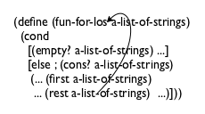
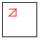
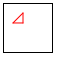
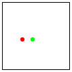
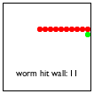
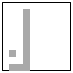
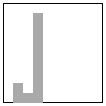

II Arbitrarily Large Data
Every data definition in Fixed-Size Data describes data of a fixed size. To us, Boolean values, numbers, strings, and images are atomic; computer scientists say they have a size of one unit. With a structure, you compose a fixed number of pieces of data. Even if you use the language of data definitions to create deeply nested structures, you always know the exact number of atomic pieces of data in any specific instance. Many programming problems, however, deal with an undetermined number of pieces of information that must be processed as one piece of data. For example, one program may have to compute the average of a bunch of numbers and another may have to keep track of an arbitrary number of objects in an interactive game. Regardless, it is impossible with your knowledge to formulate a data definition that can represent this kind of information as data.
This part revises the language of data definitions so that it becomes possible to describe data of (finite but) arbitrary size. For a concrete illustration, the first half of this part deals with lists, a form of data that appears in most modern programming languages. In parallel with the extended language of data definitions, this part also revises the design recipe to cope with such data definitions. The latter chapters demonstrate how these data definitions and the revised design recipe work in a variety of contexts.
8 Lists
You have probably not encountered self-referential definitions before. Your English teachers certainly stay away from these, and many mathematics courses are vague when it comes to such definitions. Programmers cannot afford to be vague. Their work requires precision. While a definition may in general contain several references to itself, this chapter presents useful examples that need just one, starting with the one for lists.
The introduction of lists also spices up the kind of applications we can study. While this chapter carefully builds up your intuition with examples, it also motivates the revision of the design recipe in the next chapter, which explains how to systematically create functions that deal with self-referential data definitions.
8.1 Creating Lists
All of us make lists all the time. Before we go grocery shopping, we write down a list of items we wish to purchase. Some people write down a to-do list every morning. During December, many children prepare Christmas wish lists. To plan a party, we make a list of invitees. Arranging information in the form of lists is an ubiquitous part of our life.
Given that information comes in the shape of lists, we must clearly learn how to represent such lists as BSL data. Indeed, because lists are so important, BSL comes with built-in support for creating and manipulating lists, similar to the support for Cartesian points (posn). In contrast to points, the data definition for lists is always left to you. But first things first. We start with the creation of lists.
'()
(cons "Mercury" '())
list
diagram
(cons "Mercury" '())
(cons "Venus" (cons "Mercury" '()))
(cons "Earth" (cons "Venus" (cons "Mercury" '())))


(cons "Earth" (cons "Venus" (cons "Mercury" '())))


Because even good artists would have problems with drawing deeply nested structures, computer scientists resort to box-and-arrow diagrams instead. Figure 45 illustrates how to rearrange the last row of figure 44. Each cons structure becomes a separate box. If the rest field is too complex to be drawn inside of the box, we draw a bullet instead and a line with an arrow to the box that it contains. Depending on how the boxes are arranged, you get two kinds of diagrams. The first, displayed in the top row of figure 45, lists the boxes in the order in which they are created. The second, displayed in the bottom row, lists the boxes in the order in which they are consed together. Hence the second diagram immediately tells you what first would have produced when applied to the list, no matter how long the list is. For this reason, programmers prefer the second arrangement.
a list of celestial bodies, say, at least all the planets in our solar system;
a list of items for a meal, for example, steak, french fries, beans, bread, water, Brie cheese, and ice cream; and
a list of colors.
; A 3LON is a list of three numbers: ; (cons Number (cons Number (cons Number '()))) ; interpretation a point in 3-dimensional space
; A List-of-names is one of: ; – '() ; – (cons String List-of-names) ; interpretation a list of invitees, by last name
(cons "Findler" '())
Exercise 130. Create an element of List-of-names that contains five Strings. Sketch a box representation of the list similar to those found in figure 44.
Exercise 131. Provide a data definition for representing lists of Boolean values. The class contains all arbitrarily long lists of Booleans.
8.2 What Is '(), What Is cons
Let’s step back for a moment and take a close look at '() and cons. As mentioned, '() is just a constant. When compared to constants such as 5 or "this is a string", it looks more like a function name or a variable; but when compared with #true and #false, it should be easy to see that it really is just BSL’s representation for empty lists.
> (empty? '()) #true
> (empty? 5) #false
> (empty? "hello world") #false
> (empty? (cons 1 '())) #false
> (empty? (make-posn 0 0)) #false
(define-struct pair [left right]) ; A ConsPair is a structure: ; (make-pair Any Any). ; Any Any -> ConsPair (define (our-cons a-value a-list) (make-pair a-value a-list))
> (cons 1 2) cons:second argument must be a list, but received 1 and 2
; A ConsOrEmpty is one of: ; – '() ; – (make-pair Any ConsOrEmpty) ; interpretation ConsOrEmpty is the class of all lists ; Any Any -> ConsOrEmpty (define (our-cons a-value a-list) (cond [(empty? a-list) (make-pair a-value a-list)] [(pair? a-list) (make-pair a-value a-list)] [else (error "cons: second argument ...")]))
; ConsOrEmpty -> Any ; extracts the left part of the given pair (define (our-first a-list) (if (empty? a-list) (error 'our-first "...") (pair-left a-list)))
If your program can access the structure type definition for pair, it is easy to create pairs that don’t contain '() or another pair in the right field. Whether such bad instances are created intentionally or accidentally, they tend to break functions and programs in strange ways. BSL therefore hides the actual structure type definition for cons to avoid these problems. Local Definitions demonstrates one way that your programs can hide such definitions, too, but for now, you don’t need this power.
'()
a special value, mostly to represent the empty list
a predicate to recognize '() and nothing else
a checked constructor to create two-field instances
the selector to extract the last item added
the selector to extract the extended list
a predicate to recognize instances of cons
Figure 46 summarizes this section. The key insight is that '() is a unique value and that cons is a checked constructor that produces list values. Furthermore, first, rest, and cons? are merely distinct names for the usual predicate and selectors. What this chapter teaches, then, is not a new way of creating data but a new way of formulating data definitions.
8.3 Programming with Lists
Sample Problem You are working on the contact list for some new cell phone. The phone’s owner updates and consults this list on various occasions. For now, you are assigned the task of designing a function that consumes this list of contacts and determines whether it contains the name “Flatt.”
; List-of-names -> Boolean ; determines whether "Flatt" is on a-list-of-names (define (contains-flatt? a-list-of-names) #false)
(check-expect (contains-flatt? '()) #false)
(check-expect (contains-flatt? (cons "Find" '())) #false) (check-expect (contains-flatt? (cons "Flatt" '())) #true)
(check-expect (contains-flatt? (cons "A" (cons "Flatt" (cons "C" '())))) #true)
Take a breath. Run the program. The header is a “dummy” definition for the function; you have some examples; they have been turned into tests; and best of all, some of them actually succeed. They succeed for the wrong reason but succeed they do. If things make sense now, read on.
(define (contains-flatt? alon) (cond [(empty? alon) ...] [(cons? alon) (... (first alon) ... (rest alon) ...)]))
(define (contains-flatt? alon) (cond [(empty? alon) #false] [(cons? alon) (... (string=? (first alon) "Flatt") ... (rest alon) ...)]))
Fortunately, we have contains-flatt? and it fits the bill. According to its purpose statement, it determines whether a list contains "Flatt". The statement implies that (contains-flatt? l) tells us whether the list of strings l contains "Flatt". And, in the same vein, (contains-flatt? (rest alon)) determines whether "Flatt" is a member of (rest alon), which is precisely what we need to know.
; List-of-names -> Boolean (define (contains-flatt? alon) (cond [(empty? alon) #false] [(cons? alon) (... (string=? (first alon) "Flatt") ... ... (contains-flatt? (rest alon)) ...)]))
; List-of-names -> Boolean ; determines whether "Flatt" occurs on alon (check-expect (contains-flatt? (cons "X" (cons "Y" (cons "Z" '())))) #false) (check-expect (contains-flatt? (cons "A" (cons "Flatt" (cons "C" '())))) #true) (define (contains-flatt? alon) (cond [(empty? alon) #false] [(cons? alon) (or (string=? (first alon) "Flatt") (contains-flatt? (rest alon)))]))
Figure 47 then shows the complete definition. Overall it doesn’t look too different from the definitions in the first chapter of the book. It consists of a signature, a purpose statement, two examples, and a definition. The only way in which this function definition differs from anything you have seen before is the self-reference, that is, the reference to contains-flatt? in the body of the define. Then again, the data definition is self-referential, too, so in some sense the self-reference in the function shouldn’t be too surprising.
(cons "Fagan" (cons "Findler" (cons "Fisler" (cons "Flanagan" (cons "Flatt" (cons "Felleisen" (cons "Friedman" '())))))))
Exercise 134. Develop the contains? function, which determines whether some given string occurs on a given list of strings.
(contains-flatt? (cons "Flatt" (cons "C" '()))) == (cond [(empty? (cons "Flatt" (cons "C" '()))) #false] [(cons? (cons "Flatt" (cons "C" '()))) (or (string=? (first (cons "Flatt" (cons "C" '()))) "Flatt") (contains-flatt? (rest (cons "Flatt" (cons "C" '())))))])
8.4 Computing with Lists
Figure 48 displays the first step, which uses the usual substitution rule to determine the value of an application. The result is a conditional expression because, as an algebra teacher would say, the function is defined in a step-wise fashion.
... == (cond [#false #false] [(cons? (cons "Flatt" (cons "C" '()))) (or (string=? (first (cons "Flatt" (cons "C" '()))) "Flatt") (contains-flatt? (rest (cons "Flatt" (cons "C" '())))))]) == (cond [(cons? (cons "Flatt" (cons "C" '()))) (or (string=? (first (cons "Flatt" (cons "C" '()))) "Flatt") (contains-flatt? (rest (cons "Flatt" (cons "C" '())))))]) == (cond [#true (or (string=? (first (cons "Flatt" (cons "C" '()))) "Flatt") (contains-flatt? (rest (cons "Flatt" (cons "C" '())))))]) == (or (string=? (first (cons "Flatt" (cons "C" '()))) "Flatt") (contains-flatt? (rest (cons "Flatt" (cons "C" '())))))
The calculation is continued in figure 49. To find the correct clause of the cond expression, we must determine the value of the conditions, one by one. Since a consed list isn’t empty, the first condition’s result is #false, and we therefore eliminate the first cond clause. Finally the condition in the second clause evaluates to #true because cons? of a consed list holds.
... == (or (string=? "Flatt" "Flatt") (contains-flatt? (rest (cons "Flatt" (cons "C" '()))))) == (or #true (contains-flatt? ...)) == #true
From here, it is just three more steps of arithmetic to get the final result. Figure 50 displays the three steps. The first evaluates (first (cons "Flatt" ...)) to "Flatt" due to the laws for first. The second discovers that "Flatt" is a string and equal to "Flatt". The third says (or #true X) is #true regardless of what X is.
(our-first (our-cons "a" '())) == "a" (our-rest (our-cons "a" '())) == '()

Figure 51: Arrows for self-references in data definitions and templates

9 Designing with Self-Referential Data Definitions
If a problem statement is about information of arbitrary size, you need a self-referential data definition to represent it. At this point, you have seen only one such class, List-of-names. The left side of figure 51 shows how to define List-of-strings in the same way. Other lists of atomic data work the same way.
Numbers also seem to be arbitrarily large. For inexact numbers, this is an illusion. For precise integers, this is indeed the case. Dealing with integers is therefore a part of this chapter.
For a self-referential data definition to be valid, it must satisfy two conditions. First, it must contain at least two clauses. Second, at least one of the clauses must not refer back to the class of data that is being defined. It is good practice to identify the self-references explicitly with arrows from the references in the data definition back to the term being defined; see figure 51 for an example of such an annotation.
You must check the validity of self-referential data definitions with the creation of data examples. Start with the clause that does not refer to the data definition; continue with the other one, using the first example where the clause refers to the definition itself. For the data definition in figure 51, you thus get lists like the following three:Nothing changes about the header material: the signature, the purpose statement, and the dummy definition. When you do formulate the purpose statement, focus on what the function computes not how it goes about it, especially not how it goes through instances of the given data.
; List-of-strings -> Number ; counts how many strings alos contains (define (how-many alos) 0) When it comes to functional examples, be sure to work through inputs that use the self-referential clause of the data definition several times. It is the best way to formulate tests that cover the entire function definition later.
For our running example, the purpose statement almost generates functional examples by itself from the data examples:The first row is about the empty list, and we know that empty list contains nothing. The second row is a list of one string, so 1 is the desired answer. The last row is about a list of two strings.At the core, a self-referential data definition looks like a data definition for mixed data. The development of the template can therefore proceed according to the recipe in Itemizations and Structures. Specifically, we formulate a cond expression with as many cond clauses as there are clauses in the data definition, match each recognizing condition to the corresponding clause in the data definition, and write down appropriate selector expressions in all cond lines that process compound values.
Question
Answer
Does the data definition distinguish among different sub-classes of data?
Your template needs as many cond clauses as sub-classes that the data definition distinguishes.
How do the sub-classes differ from each other?
Use the differences to formulate a condition per clause.
Do any of the clauses deal with structured values?
If so, add appropriate selector expressions to the clause.
Does the data definition use self-references?
Formulate “natural recursions” for the template to represent the self-references of the data definition.
If the data definition refers to some other data definition, where is this cross-reference to another data definition?
Specialize the template for the other data definition. Refer to this template. See Designing with Itemizations, Again, steps 4 and 5 of the design recipe.
Figure 52: How to translate a data definition into a template
Figure 52 expresses this idea as a question-and-answer game. In the left column it states questions about the data definition for the argument, and in the right column it explains what the answer means for the construction of the template.
If you ignore the last row and apply the first three questions to any function that consumes a List-of-strings, you arrive at this shape:(define (fun-for-los alos) (cond [(empty? alos) ...] [else (... (first alos) ... (rest alos) ...)])) Recall, though, that the purpose of a template is to express the data definition as a function layout. That is, a template expresses as code what the data definition for the input expresses as a mix of English and BSL. Hence all important pieces of the data definition must find a counterpart in the template, and this guideline should also hold when a data definition is self-referential—
contains an arrow from inside the definition to the term being defined. In particular, when a data definition is self-referential in the ith clause and the kth field of the structure mentioned there, the template should be self-referential in the ith cond clause and the selector expression for the kth field. For each such selector expression, add an arrow back to the function parameter. At the end, your template must have as many arrows as we have in the data definition. Figure 51 illustrates this idea with the template for functions that consume List-of-strings shown side by side with the data definition. Both contain one arrow that originates in the second clause—
the rest field and selector, respectively— and points back to the top of the respective definitions. Since BSL and most programming languages are text-oriented, you must use an alternative to the arrow, namely, a self-application of the function to the appropriate selector expression:(define (fun-for-los alos) (cond [(empty? alos) ...] [else (... (first alos) ... ... (fun-for-los (rest alos)) ...)])) We refer to a self-use of a function as recursion and in the first four parts of the book as natural recursion.For the function body we start with thoseFor the curious among our readers, the design recipe for arbitrarily large data corresponds to so-called “proofs by induction” in mathematics, and the “leap of faith” represents the use of the induction hypothesis for the inductive step of such a proof. Logic proves the validity of this proof technique with an Induction Theorem. cond lines without recursive function calls, known as base cases.The corresponding answers are typically easy to formulate or already given as examples.
Then we deal with the self-referential cases. We start by reminding ourselves what each of the expressions in the template line computes. For the natural recursion we assume that the function already works as specified in our purpose statement. This last step is a leap of faith, but as you will see, it always works.
The rest is then a matter of combining the various values.
Question
Answer
What are the answers for the non-recursive cond clauses?
The examples should tell you which values you need here. If not, formulate appropriate examples and tests.
What do the selector expressions in the recursive clauses compute?
The data definitions tell you what kind of data these expressions extract, and the interpretations of the data definitions tell you what this data represents.
What do the natural recursions compute?
Use the purpose statement of the function to determine what the value of the recursion means, not how it computes this answer. If the purpose statement doesn’t tell you the answer, improve the purpose statement.
How can the function combine these values to get the desired answer?
Find a function in BSL that combines the values. Or, if that doesn’t work, make a wish for a helper function. For many functions, this last step is straightforward. The purpose, the examples, and the template together tell you which function or expression combines the available values into the proper result. We refer to this function or expression as a combinator, slightly abusing existing terminology.
Figure 53: How to turn a template into a function definition
Question
Answer
So, if you are stuck here, ...
... arrange the examples from the third step in a table. Place the given input in the first column and the desired output in the last column. In the intermediate columns enter the values of the selector expressions and the natural recursion(s). Add examples until you see a pattern emerge that suggests a combinator.
If the template refers to some other template, what does the auxiliary function compute?
Consult the other function’s purpose statement and examples to determine what it computes, and assume you may use the result even if you haven’t finished the design of this helper function.
Figure 54: Turning a template into a function, the table method
Figure 53 formulates the first four questions and answers for this step. Let’s use this game to complete the definition of how-many. Renaming the fun-for-los template to how-many gives us this much:; List-of-strings -> Number ; determines how many strings are on alos (define (how-many alos) (cond [(empty? alos) ...] [else (... (first alos) ... ... (how-many (rest alos)) ...)])) As the functional examples already suggest, the answer for the base case is 0. The two expressions in the second clause compute the first item and the number of strings in (rest alos). To compute how many strings there are on all of alos, the function just needs to add 1 to the value of the latter expression:Felix Klock suggested this table-based approach to guessing the combinator.
Finding the correct way to combine the values into the desired answer isn’t always as easy. Novice programmers often get stuck with this step. As figure 54 suggests, it is a good idea to arrange the functional examples into a table that also spells out the values of the expressions in the template. Figure 55 shows what this table looks like for our how-many example. The left-most column lists the sample inputs, while the right-most column contains the desired answers for these inputs. The three columns in between show the values of the template expressions: (first alos), (rest alos), and (how-many (rest alos)), which is the natural recursion. If you stare at this table long enough, you recognize that the result column is always one more than the values in the natural recursion column. You may thus guess thatis the expression that computes the desired result. Since DrRacket is fast at checking these kinds of guesses, plug it in and click RUN. If the examples-turned-into-tests pass, think through the expression to convince yourself it works for all lists; otherwise add more example rows to the table until you have a different idea.The table also points out that some selector expressions in the template are possibly irrelevant for the actual definition. Here (first alos) is not needed to compute the final answer—
which is quite a contrast to contains-flatt?, which uses both expressions from the template. As you work your way through the rest of this book, keep in mind that, in many cases, the combination step can be expressed with BSL’s primitives, say, +, and, or cons. In some cases, though, you may have to make a wish, that is, design an auxiliary function. Finally, in yet other cases, you may need nested conditions.
Finally, make sure to turn all examples into tests, that these tests pass, and that running them covers all the pieces of the function.
Here are our examples for how-many turned into tests:(check-expect (how-many '()) 0) (check-expect (how-many (cons "a" '())) 1) (check-expect (how-many (cons "b" (cons "a" '()))) 2) Remember, it is best to formulate examples directly as tests, and BSL allows this. Doing so also helps if you need to resort to the table-based guessing approach of the preceding step.
alos
(first alos)
(rest alos)
(how-many (rest alos))
(how-many alos)
(cons "a" '())
"a"
'()
0
1
(cons "b" (cons "a" '()))
"b"
(cons "a" '())
1
2
(cons "x" (cons "b" (cons "a" '())))
"x"
(cons "b" (cons "a" '()))
2
3 Figure 55: Tabulating arguments, intermediate values, and results
Figure 56 summarizes the design recipe of this section in a tabular format. The first column names the steps of the design recipe, and the second the expected results of each step. In the third column, we describe the activities that get you there.You may want to copy figure 56 onto one side of an index card and write down your favorite versions of the questions and answers for this design recipe onto the back of it. Then carry it with you for future reference. The figure is tailored to the kind of self-referential list definitions we use in this chapter. As always, practice helps you master the process, so we strongly recommend that you tackle the following exercises, which ask you to apply the recipe to several kinds of examples.
steps
outcome
activity
problem analysis
data definition
Develop a data representation for the information; create examples for specific items of information and interpret data as information; identify self-references.
header
signature; purpose; dummy definition
Write down a signature using defined names; formulate a concise purpose statement; create a dummy function that produces a constant value from the specified range.
examples
examples and tests
Work through several examples, at least one per clause in the data definition.
template
function template
Translate the data definition into a template: one cond clause per data clause; selectors where the condition identifies a structure; one natural recursion per self-reference.
definition
full-fledged definition
Find a function that combines the values of the expressions in the cond clauses into the expected answer.
test
validated tests
Turn them into check-expect tests and run them.
9.1 Finger Exercises: Lists
Exercise 137. Compare the template for contains-flatt? with the one for how-many. Ignoring the function name, they are the same. Explain the similarity.
; A List-of-amounts is one of: ; – '() ; – (cons PositiveNumber List-of-amounts)
Design the sum function, which consumes a List-of-amounts and computes the sum of the amounts. Use DrRacket’s stepper to see how (sum l) works for a short list l in List-of-amounts.
; A List-of-numbers is one of: ; – '() ; – (cons Number List-of-numbers)
Design the function pos?, which consumes a List-of-numbers and determines whether all numbers are positive numbers. In other words, if (pos? l) yields #true, then l is an element of List-of-amounts. Use DrRacket’s stepper to understand how pos? works for (cons 5 '()) and (cons -1 '()).
Also design checked-sum. The function consumes a List-of-numbers. It produces their sum if the input also belongs to List-of-amounts; otherwise it signals an error. Hint Recall to use check-error.
What does sum compute for an element of List-of-numbers?
Exercise 140. Design the function all-true, which consumes a list of Boolean values and determines whether all of them are #true. In other words, if there is any #false on the list, the function produces #false.
Now design one-true, a function that consumes a list of Boolean values and determines whether at least one item on the list is #true.
Employ the table-based approach to coding. It may help with the base case. Use DrRacket’s stepper to see how these functions process the lists (cons #true '()), (cons #false '()), and (cons #true (cons #false '())).
; List-of-string -> String ; concatenates all strings in l into one long string (check-expect (cat '()) "") (check-expect (cat (cons "a" (cons "b" '()))) "ab") (check-expect (cat (cons "ab" (cons "cd" (cons "ef" '())))) "abcdef") (define (cat l) (cond [(empty? l) ""] [else (... (first l) ... (cat (rest l)) ...)]))
l
(first l)
(rest l)
(cat (rest l))
(cat l)
(cons "a" (cons "b" '()))
???
???
???
"ab"
(cons "ab" (cons "cd" (cons "ef" '())))
???
???
???
"abcdef"
Fill in the table in figure 57. Guess a function that can create the desired result from the values computed by the sub-expressions.
Use DrRacket’s stepper to evaluate (cat (cons "a" '())).
Exercise 142. Design the ill-sized? function, which consumes a list of images loi and a positive number n. It produces the first image on loi that is not an n by n square; if it cannot find such an image, it produces #false.
; ImageOrFalse is one of: ; – Image ; – #false
9.2 Non-empty Lists
Now you know enough to use cons and to create data definitions for lists. If you solved (some of) the exercises at the end of the preceding section, you can deal with lists of various flavors of numbers, lists of Boolean values, lists of images, and so on. In this section we continue to explore what lists are and how to process them.
; A List-of-temperatures is one of: ; – '() ; – (cons CTemperature List-of-temperatures) ; A CTemperature is a Number greater than -273.
; List-of-temperatures -> Number ; computes the average temperature (define (average alot) 0)
(check-expect (average (cons 1 (cons 2 (cons 3 '())))) 2)
(define (average alot) (cond [(empty? alot) ...] [(cons? alot) (... (first alot) ... ... (average (rest alot)) ...)]))
It is way too difficult, however, to turn this template into a function definition. The first cond clause needs a number that represents the average of an empty collection of temperatures, but there is no such number. Similarly, the second clause demands a function that combines a temperature and an average for the remaining temperatures into a new average. Although possible, computing the average in this way is highly unnatural.
; List-of-temperatures -> Number ; computes the average temperature (define (average alot) (/ (sum alot) (how-many alot))) ; List-of-temperatures -> Number ; adds up the temperatures on the given list (define (sum alot) 0) ; List-of-temperatures -> Number ; counts the temperatures on the given list (define (how-many alot) 0)
; List-of-temperatures -> Number ; adds up the temperatures on the given list (define (sum alot) (cond [(empty? alot) 0] [else (+ (first alot) (sum (rest alot)))]))
When you read this definition of average now, it is obviously correct simply because it directly corresponds to what everyone learns about averaging in school. Still, programs run not just for us but for others. In particular, others should be able to read the signature and use the function and expect an informative answer. But, our definition of average does not work for empty lists of temperatures.
Exercise 143. Determine how average behaves in DrRacket when applied to the empty list. Then design checked-average, a function that produces an informative error message when it is applied to '().
In mathematics, we would say exercise 143 shows that average is a partial function because it raises an error for '().
; An NEList-of-temperatures is one of: ; – ??? ; – (cons CTemperature NEList-of-temperatures)
; An NEList-of-temperatures is one of: ; – (cons CTemperature '()) ; – (cons CTemperature NEList-of-temperatures) ; interpretation non-empty lists of Celsius temperatures
(cons c '())
; NEList-of-temperatures -> Number ; computes the average temperature (check-expect (average (cons 1 (cons 2 (cons 3 '())))) 2) (define (average ne-l) (/ (sum ne-l) (how-many ne-l)))
Exercise 144. Will sum and how-many work for NEList-of-temperatures even though they are designed for inputs from List-of-temperatures? If you think they don’t work, provide counter-examples. If you think they would, explain why.
Nevertheless, the definition also raises the question how to design sum and how-many because they consume instances of NEList-of-temperatures now. Here is the obvious result of the first three steps of the design recipe:
; NEList-of-temperatures -> Number ; computes the sum of the given temperatures (check-expect (sum (cons 1 (cons 2 (cons 3 '())))) 6) (define (sum ne-l) 0)
(define (sum ne-l) (cond [(empty? (rest ne-l)) (... (first ne-l) ...)] [else (... (first ne-l) ... (rest ne-l) ...)]))
(define (sum ne-l) (cond [(empty? (rest ne-l)) (... (first ne-l) ...)] [else (... (first ne-l) ... (sum (rest ne-l)) ...)]))
(define (sum ne-l) (cond [(empty? (rest ne-l)) (first ne-l)] [else (... (first ne-l) ... (sum (rest ne-l)) ...)]))
(define (sum ne-l) (cond [(empty? (rest ne-l)) (first ne-l)] [else (+ (first ne-l) (sum (rest ne-l)))]))
Exercise 145. Design the sorted>? predicate, which consumes a NEList-of-temperatures and produces #true if the temperatures are sorted in descending order. That is, if the second is smaller than the first, the third smaller than the second, and so on. Otherwise it produces #false.
Hint This problem is another one where the table-based method for guessing the combinator works well. Here is a partial table for a number of examples in figure 58. Fill in the rest of the table. Then try to create an expression that computes the result from the pieces.
l
(first l)
(rest l)
(sorted>? (rest l))
(sorted>? l)
(cons 1 (cons 2 '()))
1
???
#true
#false
(cons 3 (cons 2 '()))
3
(cons 2 '())
???
#true
(cons 0 (cons 3 (cons 2 '())))
0
(cons 3 (cons 2 '()))
???
???
Exercise 146. Design how-many for NEList-of-temperatures. Doing so completes average, so ensure that average passes all of its tests, too.
Exercise 147. Develop a data definition for NEList-of-Booleans, a representation of non-empty lists of Boolean values. Then redesign the functions all-true and one-true from exercise 140.
Exercise 148. Compare the function definitions from this section (sum, how-many, all-true, one-true) with the corresponding function definitions from the preceding sections. Is it better to work with data definitions that accommodate empty lists as opposed to definitions for non-empty lists? Why? Why not?
9.3 Natural Numbers
> (make-list 2 "hello") (cons "hello" (cons "hello" '()))
> (make-list 3 #true) (cons #true (cons #true (cons #true '())))
> (make-list 0 17) '()
What is special about this use of add1 is that it acts more like a constructor from some structure-type definition than a regular function. For that reason, BSL also comes with the function sub1, which is the “selector” corresponding to add1. Given any natural number m not equal to 0, you can use sub1 to find out the number that went into the construction of m. Put differently, add1 is like cons and sub1 is like first and rest.
At this point you may wonder what the predicates are that distinguish 0 from those natural numbers that are not 0. There are two, just as for lists: zero?, which determines whether some given number is 0, and positive?, which determines whether some number is larger than 0.
; N String -> List-of-strings ; creates a list of n copies of s (check-expect (copier 0 "hello") '()) (check-expect (copier 2 "hello") (cons "hello" (cons "hello" '()))) (define (copier n s) '())
; N String -> List-of-strings ; creates a list of n copies of s (check-expect (copier 0 "hello") '()) (check-expect (copier 2 "hello") (cons "hello" (cons "hello" '()))) (define (copier n s) (cond [(zero? n) '()] [(positive? n) (cons s (copier (sub1 n) s))]))
At this point, you should run the tests to ensure that this function works at least for the two worked examples. In addition, you may wish to use the function on some additional inputs.
Exercise 149. Does copier function properly when you apply it to a natural number and a Boolean or an image? Or do you have to design another function? Read Abstraction for an answer.
; N -> Number ; computes (+ n pi) without using + (check-within (add-to-pi 3) (+ 3 pi) 0.001) (define (add-to-pi n) pi)
Exercise 151. Design the function multiply. It consumes a natural number n and multiplies it with a number x without using *.
Use DrRacket’s stepper to evaluate (multiply 3 x) for any x you like. How does multiply relate to what you know from grade school?
Exercise 152. Design two functions: col and row.
The function col consumes a natural number n and an image
img. It produces a column—
The function row consumes a natural number n and an image
img. It produces a row—


Exercise 153. The goal of this exercise is to visualize the result of a 1968-style European student riot. Here is the rough idea. A small group of students meets to make paint-filled balloons, enters some lecture hall, and randomly throws the balloons at the attendees. Your program displays how the balloons color the seats in the lecture hall.
Use the two functions from exercise 152 to create a rectangle of 8 by 18 squares, each of which has size 10 by 10. Place it in an empty-scene of the same size. This image is your lecture hall.
Design add-balloons. The function consumes a list of Posn whose coordinates fit into the dimensions of the lecture hall. It produces an image of the lecture hall with red dots added as specified by the Posns.
Figure 60 shows the output of our solution when given some list of Posns. The left-most is the clean lecture hall, the second one is after two balloons have hit, and the last one is a highly unlikely distribution of 10 hits. Where is the 10th?
9.4 Russian Dolls

The problem may strike you as abstract or even absurd; it isn’t clear why you would want to represent Russian dolls or what you would do with such a representation. Just play along for now.
Now consider the problem of representing such Russian dolls with BSL data. With a little bit of imagination, it is easy to see that an artist can create a nest of Russian dolls that consists of an arbitrary number of dolls. After all, it is always possible to wrap another layer around some given Russian doll. Then again, you also know that deep inside there is a solid doll without anything inside.
For each layer of a Russian doll, we could care about many different things: its size, though it is related to the nesting level; its color; the image that is painted on the surface; and so on. Here we just pick one, namely the color of the doll, which we represent with a string. Given that, we know that each layer of the Russian doll has two properties: its color and the doll that is inside. To represent pieces of information with two properties, we always define a structure type:
(define-struct layer [color doll])
(make-layer "green" "red")
(make-layer "yellow" (make-layer "green" "red"))
(make-layer "pink" (make-layer "black" "white"))

; RD -> Number ; how many dolls are a part of an-rd (define (depth an-rd) (cond [(string? an-rd) ...] [(layer? an-rd) (... (layer-color an-rd) ... ... (depth (layer-doll an-rd)) ...)]))
(layer-color an-rd) extracts the string that describes the color of the current layer;
(layer-doll an-rd) extracts the doll contained within the current layer; and
(depth (layer-doll an-rd)) determines how many dolls are part of (layer-doll an-rd), according to the purpose statement of depth.
; RD -> Number ; how many dolls are a part of an-rd (define (depth an-rd) (cond [(string? an-rd) 1] [else (+ (depth (layer-doll an-rd)) 1)]))
(check-expect (depth "red") 1) (check-expect (depth (make-layer "yellow" (make-layer "green" "red"))) 3)
"yellow, green, red"
Exercise 155. Design the function inner, which consumes an RD and produces the (color of the) innermost doll. Use DrRacket’s stepper to evaluate (inner rd) for your favorite rd.
9.5 Lists and World
Sample Problem Design a world program that simulates firing shots. Every time the “player” hits the space bar, the program adds a shot to the bottom of the canvas. These shots rise vertically at the rate of one pixel per tick.
(define HEIGHT 80) ; distances in terms of pixels (define WIDTH 100) (define XSHOTS (/ WIDTH 2)) ; graphical constants (define BACKGROUND (empty-scene WIDTH HEIGHT)) (define SHOT (triangle 3 "solid" "red"))
; A List-of-shots is one of: ; – '() ; – (cons Shot List-of-shots) ; interpretation the collection of shots fired
; A Shot is a Number. ; interpretation represents the shot's y-coordinate
; A ShotWorld is List-of-numbers. ; interpretation each number on such a list ; represents the y-coordinate of a shot
(check-expect (to-image (cons 9 '())) (place-image SHOT XSHOTS 9 BACKGROUND))
; ShotWorld -> Image (define (to-image w) (cond [(empty? w) ...] [else (... (first w) ... (to-image (rest w)) ...)]))
(place-image SHOT XSHOTS (first w) (to-image (rest w)))
Figure 61 displays the complete function definition for to-image and indeed the rest of the program, too. The design of tock is just like the design of to-image, and you should work through it for yourself. The signature of the keyh handler, though, poses one interesting question. It specifies that the handler consumes two inputs with nontrivial data definitions. On the one hand, the ShotWorld is a self-referential data definition. On the other hand, the definition for KeyEvents is a large enumeration. For now, we have you “guess” which of the two arguments should drive the development of the template; later we will study such cases in depth.
; ShotWorld -> ShotWorld (define (main w0) (big-bang w0 [on-tick tock] [on-key keyh] [to-draw to-image])) ; ShotWorld -> ShotWorld ; moves each shot up by one pixel (define (tock w) (cond [(empty? w) '()] [else (cons (sub1 (first w)) (tock (rest w)))])) ; ShotWorld KeyEvent -> ShotWorld ; adds a shot to the world if the space bar is hit (define (keyh w ke) (if (key=? ke " ") (cons HEIGHT w) w)) ; ShotWorld -> Image ; adds each shot y on w at (XSHOTS,y} to BACKGROUND (define (to-image w) (cond [(empty? w) BACKGROUND] [else (place-image SHOT XSHOTS (first w) (to-image (rest w)))]))
(define (keyh w ke) (cond [(key=? ke "left") ...] [(key=? ke "right") ...] ... [(key=? ke " ") ...] ... [(key=? ke "a") ...] ... [(key=? ke "z") ...]))
Exercise 156. Equip the program in figure 61 with tests and make sure it passes those. Explain what main does. Then run the program via main.
change the height of the canvas to 220 pixels;
change the width of the canvas to 30 pixels;
change the x location of the line of shots to “somewhere to the left of the middle”;
change the background to a green rectangle; and
change the rendering of shots to a red elongated rectangle.
Exercise 158. If you run main, press the space bar (fire a shot), and wait for a goodly amount of time, the shot disappears from the canvas. When you shut down the world canvas, however, the result is a world that still contains this invisible shot.
Design an alternative tock function that doesn’t just move shots one pixel per clock tick but also eliminates those whose coordinates place them above the canvas. Hint You may wish to consider the design of an auxiliary function for the recursive cond clause.
Exercise 159. Turn the solution of exercise 153 into a world program. Its main function, dubbed riot, consumes how many balloons the students want to throw; its visualization shows one balloon dropping after another at a rate of one per second. The function produces the list of Posns where the balloons hit.
(define-struct pair [balloon# lob]) ; A Pair is a structure (make-pair N List-of-posns) ; A List-of-posns is one of: ; – '() ; – (cons Posn List-of-posns) ; interpretation (make-pair n lob) means n balloons ; must yet be thrown and added to lob
(2) A big-bang expression is really just an expression. It is legitimate to nest it within another expression.
(3) Recall that random creates random numbers.
9.6 A Note on Lists and Sets
This book relies on your intuitive understanding of sets as collections of BSL values. The Universe of Data specifically says that a data definition introduces a name for a set of BSL values. There is one question that this book consistently asks about sets, and it is whether some element is in some given set. For example, 4 is in Number, while "four" is not. The book also shows how to use a data definition to check whether some value is a member of some named set and how to use some of the data definitions to generate sample elements of sets, but these two procedures are about data definitions, not sets per se.
At the same time, lists represent collections of values. Hence you might be wondering what the difference between a list and a set is or whether this is a needless distinction. If so, this section is for you.
Right now the primary difference between sets and lists is that the former is a concept we use to discuss steps in the design of code and the latter is one of many forms of data in BSL, our chosen programming language. The two ideas live at rather different levels in our conversations. However, given that a data definition introduces a data representation of actual information inside of BSL and given that sets are collections of information, you may now ask yourself how sets are represented inside of BSL as data.
Most full-fledged languages directly support data representations of both lists and sets.
; List-of-string String -> N ; determines how often s occurs in los (define (count los s) 0)
Let’s proceed in a straightforward and possibly naive manner and say sets are basically lists. And, to simplify further, let’s focus on lists of numbers in this section. If we now accept that it merely matters whether a number is a part of a set or not, it is almost immediately clear that we can use lists in two different ways to represent sets.
; A Son.L is one of: ; – empty ; – (cons Number Son.L) ; ; Son is used when it ; applies to Son.L and Son.R
; A Son.R is one of: ; – empty ; – (cons Number Son.R) ; ; Constraint If s is a Son.R, ; no number occurs twice in s
Figure 62 displays the two data definitions. Both basically say that a set is represented as a list of numbers. The difference is that the definition on the right comes with the constraint that no number may occur more than once on the list. After all, the key question we ask about a set is whether some number is in the set or not, and whether it is in a set once, twice, or three times makes no difference.
; Number Son.L -> Son.L ; removes x from s (define s1.L (cons 1 (cons 1 '()))) (check-expect (set-.L 1 s1.L) es) (define (set-.L x s) (remove-all x s))
; Number Son.R -> Son.R ; removes x from s (define s1.R (cons 1 '())) (check-expect (set-.R 1 s1.R) es) (define (set-.R x s) (remove x s)) Figure 63: Functions for the two data representations of sets
The test on the left uses a list that contains 1 twice, while the one on the right represents the same set with a single cons.
Because of these differences, the set- on the left must use remove-all, while the one on the right gets away with remove.
(set- 1 set123)
(define set123-version1 (cons 1 (cons 2 (cons 3 '())))) (define set123-version2 (cons 1 (cons 3 (cons 2 '()))))
(check-member-of (set-.v1 1 set123.v1) set23-version1 set23-version2)
Fixing this problem calls for the combination of two ideas. First, recall that set- is really about ensuring that the given element does not occur in the result. It is an idea that our way of turning the examples into tests does not bring across. Second, with BSL’s check-satisfied testing facility, it is possible to state precisely this idea.
; Son -> Boolean ; #true if 1 a member of s; #false otherwise (define (not-member-1? s) (not (in? 1 s)))
(check-satisfied (set- 1 set123) not-member-1?)
property
lists
sets
membership
one among many
critical
ordering
critical
irrelevant
# of occurrences
sensible
irrelevant
size
finite but arbitrary
finite or infinite
In sum, this section explains the essential differences between sets and lists and how to represent finite sets with finite lists in two different ways. BSL is not expressive enough to represent infinite sets; exercise 299 introduces a completely different representation of sets, a representation that can cope with infinite sets, too. The question of how actual programming languages represent sets is beyond the scope of this book, however.
Exercise 160. Design the functions set+.L and set+.R, which create a set by adding a number x to some given set s for the left-hand and right-hand data definition, respectively.
10 More on Lists
Lists are a versatile form of data that come with almost all languages now. Programmers have used them to build large applications, artificial intelligences, distributed systems, and more. This chapter illustrates some ideas from this world, including functions that create lists, data representations that call for structures inside of lists, and representing text files as lists.
10.1 Functions that Produce Lists
Call this new function wage*. Its task is to process all employee work hours and to determine the wages due to each of them. For simplicity, let’s assume that the input is a list of numbers, each representing the number of hours that one employee worked, and that the expected result is a list of the weekly wages earned, also represented with a list of numbers.
; List-of-numbers -> List-of-numbers ; computes the weekly wages for the weekly hours (define (wage* whrs) '())
Given that wage* consumes the same kind of data as several other functions from Lists and given that a template depends only on the shape of the data definition, you can reuse this template:
(define (wage* whrs) (cond [(empty? whrs) ...] [else (... (first whrs) ... ... (wage* (rest whrs)) ...)]))
It is now time for the most creative design step. Following the design recipe, we consider each cond line of the template in isolation. For the non-recursive case, (empty? whrs) is true, meaning the input is '(). The examples from above specify the desired answer, '(), and so we are done.
(first whrs) yields the first number on whrs, which is the first number of hours worked;
(rest whrs) is the rest of the given list; and
(wage* (rest whrs)) says that the rest is processed by the very function we are defining. As always, we use its signature and its purpose statement to figure out the result of this expression. The signature tells us that it is a list of numbers, and the purpose statement explains that this list represents the list of wages for its input, which is the rest of the list of hours.
; List-of-numbers -> List-of-numbers ; computes the weekly wages for all given weekly hours (define (wage* whrs) (cond [(empty? whrs) '()] [else (cons (wage (first whrs)) (wage* (rest whrs)))])) ; Number -> Number ; computes the wage for h hours of work (define (wage h) (* 12 h))
Exercise 161. Translate the examples into tests and make sure they all succeed. Then change the function in figure 64 so that everyone gets $14 per hour. Now revise the entire program so that changing the wage for everyone is a single change to the entire program and not several.
Exercise 162. No employee could possibly work more than 100 hours per week. To protect the company against fraud, the function should check that no item of the input list of wage* exceeds 100. If one of them does, the function should immediately signal an error. How do we have to change the function in figure 64 if we want to perform this basic reality check?
Show the products of the various steps in the design recipe. If you are stuck, show someone how far you got according to the design recipe. The recipe isn’t just a design tool for you to use; it is also a diagnosis system so that others can help you help yourself.
Exercise 163. Design convertFC. The function converts a list of measurements in Fahrenheit to a list of Celsius measurements.
Exercise 164. Design the function convert-euro, which converts a list of US$ amounts into a list of € amounts. Look up the current exchange rate on the web.
Generalize convert-euro to the function convert-euro*, which consumes an exchange rate and a list of US$ amounts and converts the latter into a list of € amounts.
Exercise 165. Design the function subst-robot, which consumes a list of toy descriptions (one-word strings) and replaces all occurrences of "robot" with "r2d2"; all other descriptions remain the same.
Generalize subst-robot to substitute. The latter consumes two strings, called new and old, and a list of strings. It produces a new list of strings by substituting all occurrences of old with new.
10.2 Structures in Lists
Representing a work week as a number is a bad choice because the printing of a paycheck requires more information than hours worked per week. Also, not all employees earn the same amount per hour. Fortunately a list may contain items other than atomic values; indeed, lists may contain whatever values we want, especially structures.
(define-struct work [employee rate hours]) ; A (piece of) Work is a structure: ; (make-work String Number Number) ; interpretation (make-work n r h) combines the name ; with the pay rate r and the number of hours h
; Low (short for list of works) is one of: ; – '() ; – (cons Work Low) ; interpretation an instance of Low represents the ; hours worked for a number of employees
'() (cons (make-work "Robby" 11.95 39) '()) (cons (make-work "Matthew" 12.95 45) (cons (make-work "Robby" 11.95 39) '()))
Stop! Also use the data definition to generate two more examples.
When you work on real-world projects, you won’t use such suffixes; instead you will use a tool for managing different versions of code.
; Low -> List-of-numbers ; computes the weekly wages for the given records (define (wage*.v2 an-low) '())
The third step of the design recipe is to work through an example. Let’s start with the second list above. It contains one work record, namely, (make-work "Robby" 11.95 39). Its interpretation is that "Robby" worked for 39 hours and that he is paid at the rate of $11.95 per hour. Hence his wage for the week is $466.05, that is, (* 11.95 39). The desired result for wage*.v2 is therefore (cons 466.05 '()). Naturally, if the input list contained two work records, we would perform this kind of computation twice, and the result would be a list of two numbers. Stop! Determine the expected result for the third data example above.
(check-expect (wage*.v2 (cons (make-work "Robby" 11.95 39) '())) (cons (* 11.95 39) '()))
(define (wage*.v2 an-low) (cond [(empty? an-low) ...] [(cons? an-low) (... (first an-low) ... ... (wage*.v2 (rest an-low)) ...)]))
(define (wage*.v2 an-low) (cond [(empty? an-low) ...] [(cons? an-low) (... (first an-low) ... ... ... (work-employee (first an-low)) ... ... ... (work-rate (first an-low)) ... ... ... (work-hours (first an-low)) ... (wage*.v2 (rest an-low)) ...)]))
(define (wage*.v2 an-low) (cond [(empty? an-low) ...] [(cons? an-low) (... (for-work (first an-low)) ... (wage*.v2 (rest an-low)) ...)])) ; Work -> ??? ; a template for processing elements of Work (define (for-work w) (... (work-employee w) ... ... (work-rate w) ... ... (work-hours w) ...))
(first an-low) extracts the first work structure from the list;
(for-work ...) says that you wish to design a function that processes work structures;
(rest an-low) extracts the rest of the given list; and
(wage*.v2 (rest an-low)) determines the list of wages for all the work records other than the first one, according to the purpose statement of the function.
; Low -> List-of-numbers ; computes the weekly wages for all weekly work records (check-expect (wage*.v2 (cons (make-work "Robby" 11.95 39) '())) (cons (* 11.95 39) '())) (define (wage*.v2 an-low) (cond [(empty? an-low) '()] [(cons? an-low) (cons (wage.v2 (first an-low)) (wage*.v2 (rest an-low)))])) ; Work -> Number ; computes the wage for the given work record w (define (wage.v2 w) (* (work-rate w) (work-hours w)))
Exercise 166. The wage*.v2 function consumes a list of work records and produces a list of numbers. Of course, functions may also produce lists of structures.
Develop a data representation for paychecks. Assume that a paycheck contains two distinctive pieces of information: the employee’s name and an amount. Then design the function wage*.v3. It consumes a list of work records and computes a list of paychecks from it, one per record.
In reality, a paycheck also contains an employee number. Develop a data representation for employee information and change the data definition for work records so that it uses employee information and not just a string for the employee’s name. Also change your data representation of paychecks so that it contains an employee’s name and number, too. Finally, design wage*.v4, a function that maps lists of revised work records to lists of revised paychecks.
Note on Iterative Refinement This exercise demonstrates the iterative refinement of a task. Instead of using data representations that include all relevant information, we started from simplistic representation of paychecks and gradually made the representation realistic. For this simple program, refinement is overkill; later we will encounter situations where iterative refinement is not just an option but a necessity.
Exercise 167. Design the function sum, which consumes a list of Posns and produces the sum of all of its x-coordinates.
Exercise 168. Design the function translate. It consumes and produces lists of Posns. For each (make-posn x y) in the former, the latter contains (make-posn x (+ y 1)). We borrow the word “translate” from geometry, where the movement of a point by a constant distance along a straight line is called a translation.
Exercise 169. Design the function legal. Like translate from exercise 168, the function consumes and produces a list of Posns. The result contains all those Posns whose x-coordinates are between 0 and 100 and whose y-coordinates are between 0 and 200.
(define-struct phone [area switch four]) ; A Phone is a structure: ; (make-phone Three Three Four) ; A Three is a Number between 100 and 999. ; A Four is a Number between 1000 and 9999.
10.3 Lists in Lists, Files
Functions and Programs introduces read-file, a function for readingAdd (require 2htdp/batch-io) to your definitions area. an entire text file as a string. In other words, the creator of read-file chose to represent text files as strings, and the function creates the data representation for specific files (specified by a name). Text files aren’t plain long texts or strings, however. They are organized into lines and words, rows and cells, and many other ways. In short, representing the content of a file as a plain string might work on rare occasions but is usually a bad choice.
ttt.txt
TTT
Put up in a place
where it's easy to see
the cryptic admonishment
T.T.T.
When you feel how depressingly
slowly you climb,
it's well to remember that
Things Take Time.
Piet Hein
(read-file "ttt.txt")
"TTT\n \nPut up in a place\nwhere ...."
- One way to represent this file is as a list of lines, where each line is represented as one string:Here the second item of the list is the empty string because the file contains an empty line.
- Another way is to use a list of words, again each word represented as a string:Note how the empty second line disappears with this representation. After all, there are no words on the empty line.
- And a third representation relies on lists of lists of words:This representation has an advantage over the second one in that it preserves the organization of the file, including the emptiness of the second line. The price is that all of a sudden lists contain lists.
; String -> String ; produces the content of file f as a string (define (read-file f) ...) ; String -> List-of-string ; produces the content of file f as a list of strings, ; one per line (define (read-lines f) ...) ; String -> List-of-string ; produces the content of file f as a list of strings, ; one per word (define (read-words f) ...) ; String -> List-of-list-of-string ; produces the content of file f as a list of list of ; strings, one list per line and one string per word (define (read-words/line f) ...) ; The above functions consume the name of a file as a String ; argument. If the specified file does not exist in the ; same folder as the program, they signal an error.
Before we get started, take a look at figure 67. It introduces
a number of useful file reading functions. They are not comprehensive:
there are many other ways of dealing with text from files, and you will
need to know a lot more to deal with all possible text files. For our
purposes here—
Figure 67 uses the names of two data definitions that do not exist yet, including one involving list-containing lists. As always, we start with a data definition, but this time we leave this task to you. Hence, before you read on, solve the following exercises. The solutions are needed to make complete sense out of the figure, and without working through the solutions, you cannot really understand the rest of this section.
Exercise 171. You know what the data definition for List-of-strings looks like. Spell it out. Make sure that you can represent Piet Hein’s poem as an instance of the definition where each line is represented as a string and another instance where each word is a string. Use read-lines and read-words to confirm your representation choices.
Next develop the data definition for List-of-list-of-strings. Again, represent Piet Hein’s poem as an instance of the definition where each line is represented as a list of strings, one per word, and the entire poem is a list of such line representations. You may use read-words/line to confirm your choice.
As you probably know, operating systems come with programs that measure files. One counts the number of lines, another determines how many words appear per line. Let us start with the latter to illustrate how the design recipe helps with the design of complex functions.
; LLS -> List-of-numbers ; determines the number of words on each line (define (words-on-line lls) '())
(define line0 (cons "hello" (cons "world" '()))) (define line1 '()) (define lls0 '()) (define lls1 (cons line0 (cons line1 '())))
Once you have data examples, it is easy to formulate functional examples; just imagine applying the function to each of the data examples. When you apply words-on-line to lls0, you should get the empty list back because there are no lines. When you apply words-on-line to lls1, you should get a list of two numbers back because there are two lines. The two numbers are 2 and 0, respectively, given that the two lines in lls1 contain two and no words each.
(check-expect (words-on-line lls0) '()) (check-expect (words-on-line lls1) (cons 2 (cons 0 '())))
(define (words-on-line lls) (cond [(empty? lls) ...] [else (... (first lls) ; a list of strings ... (words-on-line (rest lls)) ...)]))
(define (line-processor ln) (cond [(empty? lls) ...] [else (... (first ln) ; a string ... (line-processor (rest ln)) ...)]))
(first lls) extracts the first line from the non-empty list of (represented) lines;
(line-processor (first lls)) suggests that we may wish to design an auxiliary function to process this line;
(rest lls) is the rest of the list of line; and
(words-on-line (rest lls)) computes a list of words per line for the rest of the list. How do we know this? We promised just that with the signature and the purpose statement for words-on-line.
; List-of-strings -> Number ; counts the number of words on los (define (words# los) 0)
(define (words# los) (how-many los))
; An LLS is one of: ; – '() ; – (cons Los LLS) ; interpretation a list of lines, each is a list of Strings (define line0 (cons "hello" (cons "world" '()))) (define line1 '()) (define lls0 '()) (define lls1 (cons line0 (cons line1 '()))) ; LLS -> List-of-numbers ; determines the number of words on each line (check-expect (words-on-line lls0) '()) (check-expect (words-on-line lls1) (cons 2 (cons 0 '()))) (define (words-on-line lls) (cond [(empty? lls) '()] [else (cons (length (first lls)) (words-on-line (rest lls)))]))
You may wish to look over the list of functions that come with BSL. Some may look obscure but may become useful in one of the upcoming problems. Using such functions saves your time, not ours.
Figure 68 summarizes the full design for our sample problem. The figure includes two test cases. Also, instead of using the separate function words#, the definition of words-on-line simply calls the length function that comes with BSL. Experiment with the definition in DrRacket and make sure that the two test cases cover the entire function definition.
; String -> List-of-numbers ; counts the words on each line in the given file (define (file-statistic file-name) (words-on-line (read-words/line file-name)))
This idea of composing a built-in function with a newly designed function is common. Naturally, people don’t design functions randomly and expect to find something in the chosen programming language to complement their design. Instead, program designers plan ahead and design the function to the output that available functions deliver. More generally still and as mentioned above, it is common to think about a solution as a composition of two computations and to develop an appropriate data collection with which to communicate the result of one computation to the second one, where each computation is implemented with a function.
; 1String -> String ; converts the given 1String to a 3-letter numeric String (check-expect (encode-letter "z") (code1 "z")) (check-expect (encode-letter "\t") (string-append "00" (code1 "\t"))) (check-expect (encode-letter "a") (string-append "0" (code1 "a"))) (define (encode-letter s) (cond [(>= (string->int s) 100) (code1 s)] [(< (string->int s) 10) (string-append "00" (code1 s))] [(< (string->int s) 100) (string-append "0" (code1 s))])) ; 1String -> String ; converts the given 1String into a String (check-expect (code1 "z") "122") (define (code1 c) (number->string (string->int c)))
Exercise 172. Design the function collapse, which converts a list of lines into a string. The strings should be separated by blank spaces (" "). The lines should be separated with a newline ("\n").
(write-file "ttt.dat" (collapse (read-words/line "ttt.txt")))
Exercise 173. Design a program that removes all articles from a text file. The program consumes the name n of a file, reads the file, removes the articles, and writes the result out to a file whose name is the result of concatenating "no-articles-" with n. For this exercise, an article is one of the following three words: "a", "an", and "the".
Use read-words/line so that the transformation retains the organization of the original text into lines and words. When the program is designed, run it on the Piet Hein poem.
Exercise 174. Design a program that encodes text files numerically. Each letter in a word should be encoded as a numeric three-letter string with a value between 0 and 256. Figure 69 shows our encoding function for single letters. Before you start, explain these functions.
Hints (1) Use read-words/line to preserve the organization of the file into lines and words. (2) Read up on explode again.
Exercise 175. Design a BSL program that simulates the Unix command wc. The purpose of the command is to count the number of 1Strings, words, and lines in a given file. That is, the command consumes the name of a file and produces a value that consists of three numbers.
; Matrix -> Matrix ; transposes the given matrix along the diagonal (define wor1 (cons 11 (cons 21 '()))) (define wor2 (cons 12 (cons 22 '()))) (define tam1 (cons wor1 (cons wor2 '()))) (check-expect (transpose mat1) tam1) (define (transpose lln) (cond [(empty? (first lln)) '()] [else (cons (first* lln) (transpose (rest* lln)))]))
; A Matrix is one of: ; – (cons Row '()) ; – (cons Row Matrix) ; constraint all rows in matrix are of the same length ; A Row is one of: ; – '() ; – (cons Number Row)
(define row1 (cons 11 (cons 12 '()))) (define row2 (cons 21 (cons 22 '()))) (define mat1 (cons row1 (cons row2 '())))
The function in figure 70 implements the important mathematical operation of transposing the entries in a matrix. To transpose means to mirror the entries along the diagonal, that is, the line from the top-left to the bottom-right.
Stop! Transpose mat1 by hand, then read figure 70. Why does transpose ask (empty? (first lln))?
first*, which consumes a matrix and produces the first column as a list of numbers; and
rest*, which consumes a matrix and removes the first column. The result is a matrix.
Even though you lack definitions for these functions, you should be able to understand how transpose works. You should also understand that you cannot design this function with the design recipes you have seen so far. Explain why.
Design the two wish-list functions. Then complete the design of transpose with some test cases.
10.4 A Graphical Editor, Revisited
A Graphical Editor is about the design of an interactive graphical one-line editor. It suggests two different ways to represent the state of the editor and urges you to explore both: a structure that contains a pair of strings or a structure that combines a string with an index to a current position (see exercise 87).
(define-struct editor [pre post]) ; An Editor is a structure: ; (make-editor Lo1S Lo1S) ; An Lo1S is one of: ; – '() ; – (cons 1String Lo1S)
(define good (cons "g" (cons "o" (cons "o" (cons "d" '()))))) (define all (cons "a" (cons "l" (cons "l" '())))) (define lla (cons "l" (cons "l" (cons "a" '())))) ; data example 1: (make-editor all good) ; data example 2: (make-editor lla good)
- (make-editor pre post) could mean the letters in pre precede the cursor and those in post succeed it and that the combined text is
(string-append (implode pre) (implode post))
- (make-editor pre post) could equally well mean that the letters in pre precede the cursor in reverse order. If so, we obtain the text in the displayed editor like this:
(string-append (implode (rev pre)) (implode post)) The function rev must consume a list of 1Strings and reverse it.

Both interpretations are fine choices, but it turns out that using the second one greatly simplifies the design of the program. The rest of this section demonstrates this point, illustrating the use of lists inside of structures at the same time. To appreciate the lesson properly, you should have solved the exercises in A Graphical Editor.
; Lo1s -> Lo1s ; produces a reverse version of the given list (check-expect (rev (cons "a" (cons "b" (cons "c" '())))) (cons "c" (cons "b" (cons "a" '())))) (define (rev l) l)
l
(first l)
(rest l)
(rev (rest l))
(rev l)
(cons "a" '())
"a"
'()
'()
(cons "a" '())
(cons "a" (cons "b" (cons "c" '())))
"a"
(cons "b" (cons "c" '()))
(cons "c" (cons "b" '()))
(cons "c" (cons "b" (cons "a" '())))
; Lo1s 1String -> Lo1s ; creates a new list by adding s to the end of l (check-expect (add-at-end (cons "c" (cons "b" '())) "a") (cons "c" (cons "b" (cons "a" '())))) (define (add-at-end l s) l)
(define (add-at-end l s) (cond [(empty? l) ...] [else (... (first l) ... ... (add-at-end (rest l) s) ...)]))
(add-at-end '() s)
(define (add-at-end l s) (cond [(empty? l) (cons s '())] [else (cons (first l) (add-at-end (rest l) s))]))
Exercise 177. Design the function create-editor. The function consumes two strings and produces an Editor. The first string is the text to the left of the cursor and the second string is the text to the right of the cursor. The rest of the section relies on this function.
(define HEIGHT 20) ; the height of the editor (define WIDTH 200) ; its width (define FONT-SIZE 16) ; the font size (define FONT-COLOR "black") ; the font color (define MT (empty-scene WIDTH HEIGHT)) (define CURSOR (rectangle 1 HEIGHT "solid" "red"))
; Editor -> Image ; renders an editor as an image of the two texts ; separated by the cursor (define (editor-render e) MT) ; Editor KeyEvent -> Editor ; deals with a key event, given some editor (define (editor-kh ed ke) ed)(index "editor-kh")
; main : String -> Editor ; launches the editor given some initial string (define (main s) (big-bang (create-editor s "") [on-key editor-kh] [to-draw editor-render]))
(check-expect (editor-kh (create-editor "" "") "e") (create-editor "e" "")) (check-expect (editor-kh (create-editor "cd" "fgh") "e") (create-editor "cde" "fgh"))
Before you read on, you should make up examples that illustrate how editor-kh works when you press the backspace ("\b") key to delete some letter, the "left" and "right" arrow keys to move the cursor, or some other arrow keys. In all cases, consider what should happen when the editor is empty, when the cursor is at the left end or right end of the non-empty string in the editor, and when it is in the middle. Even though you are not working with intervals here, it is still a good idea to develop examples for the “extreme” cases.
Once you have test cases, it is time to develop the template. In the case of editor-kh you are working with a function that consumes two complex forms of data: one is a structure containing lists, the other one is a large enumeration of strings. Generally speaking, this design case calls for an improved design recipe; but in cases like these, it is also clear that you should deal with one of the inputs first, namely, the keystroke.
(define (editor-kh ed k) (cond [(key=? k "left") ...] [(key=? k "right") ...] [(key=? k "\b") ...] [(key=? k "\t") ...] [(key=? k "\r") ...] [(= (string-length k) 1) ...] [else ...]))
Exercise 178. Explain why the template for editor-kh deals with "\t" and "\r" before it checks for strings of length 1.
(define (editor-kh ed k) (cond [(key=? k "left") (editor-lft ed)] [(key=? k "right") (editor-rgt ed)] [(key=? k "\b") (editor-del ed)] [(key=? k "\t") ed] [(key=? k "\r") ed] [(= (string-length k) 1) (editor-ins ed k)] [else ed]))
(check-expect (editor-ins (make-editor '() '()) "e") (make-editor (cons "e" '()) '())) (check-expect (editor-ins (make-editor (cons "d" '()) (cons "f" (cons "g" '()))) "e") (make-editor (cons "e" (cons "d" '())) (cons "f" (cons "g" '()))))
At this point, you should do two things. First, run the tests for this function. Second, use the interpretation of Editor and explain abstractly why this function performs the insertion. And as if this isn’t enough, you may wish to compare this simple definition with the one from exercise 84 and figure out why the other one needs an auxiliary function while our definition here doesn’t.
; Editor -> Editor ; moves the cursor position one 1String left, ; if possible (define (editor-lft ed) ed) ; Editor -> Editor ; moves the cursor position one 1String right, ; if possible (define (editor-rgt ed) ed) ; Editor -> Editor ; deletes a 1String to the left of the cursor, ; if possible (define (editor-del ed) ed)
(place-image/align (beside (text "pre" FONT-SIZE FONT-COLOR) CURSOR (text "post" FONT-SIZE FONT-COLOR)) 1 1 "left" "top" MT)
; Editor -> Image (define (editor-render e) (place-image/align (beside (editor-text (editor-pre e)) CURSOR (editor-text (editor-post e))) 1 1 "left" "top" MT))
; Lo1s -> Image ; renders a list of 1Strings as a text image (define (editor-text s) (text "" FONT-SIZE FONT-COLOR))
(create-editor "pre" "post")
(check-expect (editor-text (cons "p" (cons "o" (cons "s" (cons "t" '()))))) (text "post" FONT-SIZE FONT-COLOR))
(define (editor-text s) (cond [(empty? s) ...] [else (... (first s) ... (editor-text (rest s)) ...)]))
Exercise 180. Design editor-text without using implode.
(define (editor-render ed) (place-image/align (beside (editor-text (reverse (editor-pre ed))) CURSOR (editor-text (editor-post ed))) 1 1 "left" "top" MT))
Note Modern applications allow users to position the cursor with the mouse (or other gesture-based devices). While it is in principle possible to add this capability to your editor, we wait with doing so until A Graphical Editor, with Mouse.
11 Design by Composition
By now you know that programs are complex products and that their production requires the design of many collaborating functions. This collaboration works well if the designer knows when to design several functions and how to compose these functions into one program.
You have encountered this need to design interrelated functions several times. Sometimes a problem statement implies several different tasks, and each task is best realized with a function. At other times, a data definition may refer to another one, and in that case, a function processing the former kind of data relies on a function processing the latter.
In this chapter, we present several scenarios that call for the design of programs that compose many functions. To support this kind of design, the chapter presents some informal guidelines on divvying up functions and composing them. Since these examples demand complex forms of lists, however, this chapter starts with a section on concise list notation.
11.1 The list Function
At this point, you should have tired of writing so many conses just to create a list, especially for lists that contain a bunch of values. Fortunately, we have an additional teaching language for you thatYou have graduated from BSL. It is time to use the “Language” menu and to select “Beginning Student with List Abbreviations” for your studies. provides mechanisms for simplifying this part of a programmer’s life. BSL+ does so, too.
(list 0 1 2 3 4 5 6 7 8 9)
(list (list "bob" 0 "a") (list "carl" 1 "a") (list "dana" 2 "b") (list "erik" 3 "c") (list "frank" 4 "a") (list "grant" 5 "b") (list "hank" 6 "c") (list "ian" 7 "a") (list "john" 8 "d") (list "karel" 9 "e"))
11.2 Composing Functions
Design one function per task. Formulate auxiliary function definitions for every dependency between quantities in the problem.
Design one template per data definition. Formulate auxiliary function definitions when one data definition points to a second data definition.
If the composition of values requires knowledge of a particular domain of application—
for example, composing two (computer) images, accounting, music, or science— design an auxiliary function. If the composition of values requires a case analysis of the available values—
for example, depends on a number being positive, zero, or negative— use a cond expression. If the cond looks complex, design an auxiliary function whose arguments are the template’s expressions and whose body is the cond expression. If the composition of values must process an element from a self-referential data definition—
a list, a natural number, or something like those— design an auxiliary function. If everything fails, you may need to design a more general function and define the main function as a specific use of the general function. This suggestion sounds counterintuitive, but it is called for in a remarkably large number of cases.
The last two criteria are situations that we haven’t discussed in any detail, though examples have come up before. The next two sections illustrate these principles with additional examples.
Wish List
Maintain a list of function headers that must be designed to complete a program. Writing down complete function headers ensures that you can test those portions of the programs that you have finished, which is useful even though many tests will fail. Of course, when the wish list is empty, all tests should pass and all functions should be covered by tests.
11.3 Auxiliary Functions that Recur
People need to sort things all the time, and so do programs. Investment advisors sort portfolios by the profit each holding generates. Game programs sort lists of players according to scores. And mail programs sort messages according to date or sender or some other criterion.
Sample Problem Design a function that sorts a list of reals.
; List-of-numbers -> List-of-numbers ; produces a sorted version of alon (define (sort> alon) alon)
; List-of-numbers -> List-of-numbers ; rearranges alon in descending order (check-expect (sort> '()) '()) (check-expect (sort> (list 3 2 1)) (list 3 2 1)) (check-expect (sort> (list 1 2 3)) (list 3 2 1)) (check-expect (sort> (list 12 20 -5)) (list 20 12 -5)) (define (sort> alon) alon)
(define (sort> alon) (cond [(empty? alon) ...] [else (... (first alon) ... ... (sort> (rest alon)) ...)]))
Inserting a number into a sorted list clearly isn’t a simple task. It demands searching through the sorted list to find the proper place of the item. Searching through any list demands an auxiliary function because lists are of arbitrary size and, by item 3 of the preceding section, processing values of arbitrary size calls for the design of an auxiliary function.
; Number List-of-numbers -> List-of-numbers ; inserts n into the sorted list of numbers alon (define (insert n alon) alon)
Stop! Test the program as is. Some test cases pass, and some fail. That’s progress. The next step in its design is the creation of functional examples. Since the first input of insert is any number, we use 5 and use the data definition for List-of-numbers to make up examples for the second input.
(check-expect (insert 5 '()) (list 5))
(check-expect (insert 5 (list 6)) (list 6 5)) (check-expect (insert 5 (list 4)) (list 5 4))
(check-expect (insert 12 (list 20 -5)) (list 20 12 -5))
Note what the development of examples teaches us. The insert function has to find the first number that is smaller than the given n. When there is no such number, the function eventually reaches the end of the list and it must add n to the end. Now, before we move on to the template, you should work out some additional examples. To do so, you may wish to use the supplementary examples for sort>.
(define (insert n alon) (cond [(empty? alon) ...] [else (... (first alon) ... ... (insert n (rest alon)) ...)]))
To fill the gaps in the template of insert, we again proceed on a case-by-case basis. The first case concerns the empty list. According to the first example, (list n) is the expression needed in the first cond clause because it constructs a sorted list from n and alon.
(insert 7 (list 6 5 4))
(insert 0 (list 6 2 1 -1))
If so, all the items in alon are smaller than n because alon is already sorted. The answer in that case is (cons n alon).
- If, however, n is smaller than (first alon), then the function has not yet found the proper place to insert n into alon. The first item of the result must be (first alon) and that n must be inserted into (rest alon). The final result in this case isbecause this list contains n and all items of alon in sorted order—
which is what we need.
Figure 72 contains the complete sort program. Copy it into the definitions area of DrRacket, add the test cases back in, and test the program. All tests should pass now, and they should cover all expressions.
Terminology This particular program for sorting is known as insertion sort in the programming literature. Later we will study alternative ways to sort lists, using an entirely different design strategy.
; List-of-numbers -> List-of-numbers ; produces a sorted version of l (define (sort> l) (cond [(empty? l) '()] [(cons? l) (insert (first l) (sort> (rest l)))])) ; Number List-of-numbers -> List-of-numbers ; inserts n into the sorted list of numbers l (define (insert n l) (cond [(empty? l) (cons n '())] [else (if (>= n (first l)) (cons n l) (cons (first l) (insert n (rest l))))]))
Exercise 186. Take a second look at Intermezzo 1: Beginning Student Language, the intermezzo that presents BSL and its ways of formulating tests. One of the latter is check-satisfied, which determines whether an expression satisfies a certain property. Use sorted>? from exercise 145 to reformulate the tests for sort> with check-satisfied.
; List-of-numbers -> List-of-numbers ; produces a sorted version of l (define (sort>/bad l) (list 9 8 7 6 5 4 3 2 1 0))
Notes (1) What may surprise you here is that we define a function to
create a test. In the real world, this step is common, and, on occasion, you
really need to design functions for tests—
(define-struct gp [name score]) ; A GamePlayer is a structure: ; (make-gp String Number) ; interpretation (make-gp p s) represents player p who ; scored a maximum of s points
(define-struct email [from date message]) ; An Email Message is a structure: ; (make-email String Number String) ; interpretation (make-email f d m) represents text m ; sent by f, d seconds after the beginning of time
; Number List-of-numbers -> Boolean (define (search n alon) (cond [(empty? alon) #false] [else (or (= (first alon) n) (search n (rest alon)))]))
Develop the function search-sorted, which determines whether a number occurs in a sorted list of numbers. The function must take advantage of the fact that the list is sorted.
Exercise 190. Design the prefixes function, which consumes a list of 1Strings and produces the list of all prefixes. A list p is a prefix of l if p and l are the same up through all items in p. For example, (list "a" "b" "c") is a prefix of itself and (list "a" "b" "c" "d").
Design the function suffixes, which consumes a list of 1Strings and produces all suffixes. A list s is a suffix of l if p and l are the same from the end, up through all items in s. For example, (list "b" "c" "d") is a suffix of itself and (list "a" "b" "c" "d").
11.4 Auxiliary Functions that Generalize
On occasion an auxiliary function is not just a small helper function but a solution to a more general problem. Such auxiliaries are needed when a problem statement is too narrow. As programmers work through the steps of the design recipe, they may discover that the “natural” solution is wrong. An analysis of this broken solution may suggest a slightly different, but more general, problem statement, as well as a simple way of using the solution to the general problem for the original one.
Sample Problem Design a function that adds a polygon to a given scene.
A polygon is a planar figure with at least three points (not on a straight line) connected by three straight sides.
(define triangle-p (list (make-posn 20 10) (make-posn 20 20) (make-posn 30 20)))
(define square-p (list (make-posn 10 10) (make-posn 20 10) (make-posn 20 20) (make-posn 10 20)))
The point is that a naively chosen data representation—
; a plain background image (define MT (empty-scene 50 50)) ; Image Polygon -> Image ; renders the given polygon p into img (define (render-poly img p) img)
(check-expect (render-poly MT triangle-p) (scene+line (scene+line (scene+line MT 20 10 20 20 "red") 20 20 30 20 "red") 30 20 20 10 "red"))
(check-expect (render-poly MT square-p) (scene+line (scene+line (scene+line (scene+line MT 10 10 20 10 "red") 20 10 20 20 "red") 20 20 10 20 "red") 10 20 10 10 "red"))
It is truly better to formulate conditions in terms of built-in predicates and selectors than your own (recursive) functions. See Intermezzo 5: The Cost of Computation for an explanation.
(define (render-poly img p) (cond [(empty? (rest (rest (rest p)))) (... (first p) ... img ... ... (second p) ... ... (third p) ...)] [else (... (first p) ... ... (render-poly img (rest p)) ...)]))
; Image Posn Posn -> Image ; draws a red line from Posn p to Posn q into im (define (render-line im p q) im)
(render-line (render-line (render-line MT (first p) (second p)) (second p) (third p)) (third p) (first p))
(define (render-poly img p) (cond [(empty? (rest (rest (rest p)))) (render-line (render-line (render-line MT (first p) (second p)) (second p) (third p)) (third p) (first p))] [else (render-line (render-poly img (rest p)) (first p) (second p))]))
; Image Posn Posn -> Image ; renders a line from p to q into img (define (render-line img p q) (scene+line img (posn-x p) (posn-y p) (posn-x q) (posn-y q) "red"))
Lastly, we must test the functions. The tests for render-poly fail. On the one hand, the test failure is fortunate because it is the purpose of tests to find problems before they affect regular consumers. On the other hand, the flaw is unfortunate because we followed the design recipe, we made fairly natural choices, and yet the function doesn’t work.
> (render-poly MT square-p) 
> (render-poly MT (rest square-p)) 
While the experiments confirm the problems of our design, they also suggest that the function is “almost correct.” It connects the successive dots specified by a list of Posns, and then it draws a line from the first to the last Posn of the trailing triangle. If it skipped this last step, the function would just “connect the dots” and thus draw an “open” polygon. By connecting the first and the last point, it could then complete its task.
Solve a more general problem.
Use the solution to this general problem to solve the original one.
Sample Problem Design a function that draws connections between a given bunch of dots and into a given scene.
; Image NELoP -> Image ; connects the dots in p by rendering lines in img (define (connect-dots img p) MT)
(check-expect (connect-dots MT triangle-p) (scene+line (scene+line MT 20 0 10 10 "red") 10 10 30 10 "red"))
Exercise 191. Adapt the second example for the render-poly function to connect-dots.
(define (connect-dots img p) (cond [(empty? (rest p)) (... (first p) ...)] [else (... (first p) ... ... (connect-dots img (rest p)) ...)]))
(define (connect-dots img p) (cond [(empty? (rest p)) img] [else (render-line (connect-dots img (rest p)) (first p) (second p))]))
Conversely, we say that connect-dots generalizes render-poly. Every input for the latter is also an input for the former. Or in terms of data definitions, every Polygon is also an NELoP. But, there are many NELoPs that are not Polygons. To be precise, all lists of Posns that contain two items or one belong to NELoP but not to Polygon. The key insight for you is, however, that just because a function has to deal with more inputs than another function does not mean that the former is more complex than the latter; generalizations often simplify function definitions.
; Image Polygon -> Image ; adds an image of p to img (define (render-polygon img p) (render-line (connect-dots img p) (first p) (last p)))
(define (last p) (cond [(empty? (rest p)) (... (first p) ...)] [else (... (first p) ... (last (rest p)) ...)]))
; Image Polygon -> Image ; adds an image of p to MT (define (render-polygon img p) (render-line (connect-dots img p) (first p) (last p))) ; Image NELoP -> Image ; connects the Posns in p in an image (define (connect-dots img p) (cond [(empty? (rest p)) MT] [else (render-line (connect-dots img (rest p)) (first p) (second p))])) ; Image Posn Posn -> Image ; draws a red line from Posn p to Posn q into im (define (render-line im p q) (scene+line im (posn-x p) (posn-y p) (posn-x q) (posn-y q) "red")) ; Polygon -> Posn ; extracts the last item from p (define (last p) (cond [(empty? (rest (rest (rest p)))) (third p)] [else (last (rest p))]))
In summary, the development of render-poly naturally points us to
consider the general problem of connecting a list of successive dots. We
can then solve the original problem by defining a function that composes
the general function with other auxiliary functions. The program therefore
consists of a relatively straightforward main
function—
Exercise 194. Modify connect-dots so that it consumes an additional Posn to which the last Posn is connected. Then modify render-poly to use this new version of connect-dots.
Naturally, functions such as last are available in a full-fledged programming language, and something like render-poly is available in the 2htdp/image library. If you are wondering why we just designed these functions, consider the titles of both the book and this section. The goal is not (just) to design useful functions but to study how code is designed systematically. Specifically, this section is about the idea of generalization in the design process; for more on this idea see Abstraction and Accumulators.
12 Projects: Lists
This chapter presents several extended exercises, all of which aim to solidify your understanding of the elements of design: the design of batchThis chapter relies on the 2htdp/batch-io library. and interactive programs, design by composition, design wish lists, and the design recipe for functions. The first section covers problems involving real-world data: English dictionaries and iTunes libraries. A word-games problem requires two sections: one to illustrate design by composition, the other to tackle the heart of the problem. The remaining sections are about games and finite-state machines.
12.1 Real-World Data: Dictionaries
Information in the real world tends to come in large quantities, which is why it makes so much sense to use programs for processing it. For example, a dictionary does not just contain a dozen words, but hundreds of thousands. When you want to process such large pieces of information, you must carefully design the program using small examples. Once youFor performance concerns, see Generative Recursion. From here to there, the focus is on designing programs systematically so that you can then explore performance problems properly. have convinced yourself that the programs work properly, you run them on the real-world data to get real results. If the program is too slow to process this large quantity of data, reflect on each function and how it works. Question whether you can eliminate any redundant computations.
; On OS X: (define LOCATION "/usr/share/dict/words") ; On LINUX: /usr/share/dict/words or /var/lib/dict/words ; On WINDOWS: borrow the word file from your Linux friend ; A Dictionary is a List-of-strings. (define AS-LIST (read-lines LOCATION))
Figure 74 displays the one line of code needed to read in an entire dictionary of the English language. To get an idea of how large such dictionaries are, adapt the code from the figure for your particular computer and use length to determine how many words are in your dictionary. There are 235,886 words in ours today, July 25, 2017.
; A Letter is one of the following 1Strings: ; – "a" ; – ... ; – "z" ; or, equivalently, a member? of this list: (define LETTERS (explode "abcdefghijklmnopqrstuvwxyz"))
Exercise 195. Design the function starts-with#, which consumes a Letter and Dictionary and then counts how many words in the given Dictionary start with the given Letter. Once you know that your function works, determine how many words start with "e" in your computer’s dictionary and how many with "z".
Exercise 196. Design count-by-letter. The function consumes a Dictionary and counts how often each letter is used as the first one of a word in the given dictionary. Its result is a list of Letter-Counts, a piece of data that combines letters and counts.
Once your function is designed, determine how many words appear for all letters in your computer’s dictionary.
Note on Design Choices An alternative is to design an auxiliary function that consumes a list of letters and a dictionary and produces a list of Letter-Counts that report how often the given letters occur as first ones in the dictionary. You may of course reuse your solution of exercise 195. Hint If you design this variant, notice that the function consumes two lists, requiring a design problem that is covered in Simultaneous Processing in detail. Think of Dictionary as an atomic piece of data that is along for the ride and is handed over to starts-with# as needed.
Exercise 197. Design most-frequent. The function consumes a Dictionary. It produces the Letter-Count for the letter that occurs most often as the first one in the given Dictionary.
What is the most frequently used letter in your computer’s dictionary and how often is it used?
Design a function that picks the pair with the maximum count.
Design a function that selects the first from a sorted list of pairs.
Exercise 198. Design words-by-first-letter. The function consumes a Dictionary and produces a list of Dictionarys, one per Letter.
(check-expect (most-frequent AS-LIST) (most-frequent.v2 AS-LIST))
One alternative is to exclude the resulting empty dictionaries from the overall result. Doing so simplifies both the testing of the function and the design of most-frequent.v2, but it also requires the design of an auxiliary function.
The other one is to include '() as the result of looking for words of a certain letter, even if there aren’t any. This alternative avoids the auxiliary function needed for the first alternative but adds complexity to the design of most-frequent.v2. End
Note on Intermediate Data and Deforestation This second version of the word-counting function computes the desired result via the creation of a large intermediate data structure that serves no real purpose other than that its parts are counted. On occasion, the programming language eliminates them automatically by fusing the two functions into one, a transformation on programs that is also called deforestation. When you know that the language does not deforest programs, consider eliminating such data structures if the program does not process data fast enough.
12.2 Real-World Data: iTunes
Apple’s iTunes software is widely used to collect music, videos, TV shows,
and so on. You may wish to analyze the information that your iTunes
application gathers. It is actually quite easy to extract its
database. Select the application’s File menu, choose Library and
then Export—
Track ID, a unique identifier for the track with respect to your library, example: 442
Name, the title of the track, Wild Child
Artist, the producing artists, Enya
Album, the title of the album to which it belongs, A Day Without
Genre, the music genre to which the track is assigned, New Age
Kind, the encoding of the music, MPEG audio file
Size, the size of the file, 4562044
Total Time, the length of the track in milliseconds, 227996
Track Number, the position of the track within the album, 2
Track Count, the number of tracks on the album, 11
Year, the year of release, 2000
Date Added, when the track was added, 2002-7-17 3:55:14
Play Count, how many times it was played, 20
Play Date, when the track was last played, 3388484113 Unix seconds
Play Date UTC, when it was last played, 2011-5-17 17:35:13
As always, the first task is to choose a BSL data representation for this information. In this section, we use two representations for music tracks: a structure-based one and another based on lists.In addition to the 2htdp/batch-io library, this section relies on the 2htdp/itunes library. While the former records a fixed number of attributes per track and only if all information is available, the latter comes with whatever information is available represented as data. Each serves particular uses well; for some uses, both representations are useful.
; the 2htdp/itunes library documentation, part 1: ; An LTracks is one of: ; – '() ; – (cons Track LTracks) (define-struct track [name artist album time track# added play# played]) ; A Track is a structure: ; (make-track String String String N N Date N Date) ; interpretation An instance records in order: the track's ; title, its producing artist, to which album it belongs, ; its playing time in milliseconds, its position within the ; album, the date it was added, how often it has been ; played, and the date when it was last played (define-struct date [year month day hour minute second]) ; A Date is a structure: ; (make-date N N N N N N) ; interpretation An instance records six pieces of information: ; the date's year, month (between 1 and 12 inclusive), ; day (between 1 and 31), hour (between 0 ; and 23), minute (between 0 and 59), and ; second (also between 0 and 59). Figure 75: Representing iTunes tracks as structures (the structures)
; Any Any Any Any Any Any Any Any -> Track or #false ; creates an instance of Track for legitimate inputs ; otherwise it produces #false (define (create-track name artist album time track# added play# played) ...) ; Any Any Any Any Any Any -> Date or #false ; creates an instance of Date for legitimate inputs ; otherwise it produces #false (define (create-date y mo day h m s) ...) ; String -> LTracks ; creates a list-of-tracks representation from the ; text in file-name (an XML export from iTunes) (define (read-itunes-as-tracks file-name) ...) Figure 76: Representing iTunes tracks as structures (the functions)
Figures 75 and 76 introduce the structure-based representation of tracks as implemented by the 2htdp/itunes library. The track structure type comes with eight fields, each representing a particular property of the track. Most fields contain atomic kinds of data, such as Strings and Ns; others contain Dates, which is a structure type with six fields. The 2htdp/itunes library exports all predicates and selectors for the track and date structure types, but in lieu of constructors it provides checked constructors.
The last element of the description of the 2htdp/itunes library is a function that reads an iTunes XML library description and delivers a list of tracks, LTracks. Once you have exported the XML library from some iTunes app, you can run the following code snippet to retrieve all the records:
; modify the following to use your chosen name (define ITUNES-LOCATION "itunes.xml") ; LTracks (define itunes-tracks (read-itunes-as-tracks ITUNES-LOCATION))
Exercise 199. While the important data definitions are already provided, the first step of the design recipe is still incomplete. Make up examples of Dates, Tracks, and LTracks. These examples come in handy for the following exercises as inputs.
Exercise 200. Design the function total-time, which consumes an element of LTracks and produces the total amount of play time. Once the program is done, compute the total play time of your iTunes collection.
Exercise 201. Design select-all-album-titles. The function consumes an LTracks and produces the list of album titles as a List-of-strings.
Also design the function create-set. It consumes a List-of-strings and constructs one that contains every String from the given list exactly once. Hint If String s is at the front of the given list and occurs in the rest of the list, too, create-set does not keep s.
Finally design select-album-titles/unique, which consumes an LTracks and produces a list of unique album titles. Use this function to determine all album titles in your iTunes collection and also find out how many distinct albums it contains.
Exercise 202. Design select-album. The function consumes the title of an album and an LTracks. It extracts from the latter the list of tracks that belong to the given album.
Exercise 203. Design select-album-date. The function consumes the title of an album, a date, and an LTracks. It extracts from the latter the list of tracks that belong to the given album and have been played after the given date. Hint You must design a function that consumes two Dates and determines whether the first occurs before the second.
Exercise 204. Design select-albums. The function consumes an element of LTracks. It produces a list of LTracks, one per album. Each album is uniquely identified by its title and shows up in the result only once. Hints (1) You want to use some of the solutions of the preceding exercises. (2) The function that groups consumes two lists: the list of album titles and the list of tracks; it considers the latter as atomic until it is handed over to an auxiliary function. See exercise 196.
Terminology The functions whose names starts with select- are so-called database queries. See Project: Database for more details. End
; the 2htdp/itunes library documentation, part 2: ; An LLists is one of: ; – '() ; – (cons LAssoc LLists) ; An LAssoc is one of: ; – '() ; – (cons Association LAssoc) ; ; An Association is a list of two items: ; (cons String (cons BSDN '())) ; A BSDN is one of: ; – Boolean ; – Number ; – String ; – Date ; String -> LLists ; creates a list of lists representation for all tracks in ; file-name, which must be an XML export from iTunes (define (read-itunes-as-lists file-name) ...)
Figure 77 shows how the 2htdp/itunes library represents tracks with lists. An LLists is a list of track representations, each of which is a list of lists pairing Strings with four kinds of values. The read-itunes-as-lists function reads an iTunes XML library and produces an element of LLists. Hence, you get access to all track information if you add the following definitions to your program:
; modify the following to use your chosen name (define ITUNES-LOCATION "itunes.xml") ; LLists (define list-tracks (read-itunes-as-lists ITUNES-LOCATION))
Exercise 205. Develop examples of LAssoc and LLists, that is, the list representation of tracks and lists of such tracks.
Exercise 206. Design the function find-association. It consumes three arguments: a String called key, an LAssoc, and an element of Any called default. It produces the first Association whose first item is equal to key, or default if there is no such Association.
Note Read up on assoc after you have designed this function.
Exercise 207. Design total-time/list, which consumes an LLists and produces the total amount of play time. Hint Solve exercise 206 first.
Once you have completed the design, compute the total play time of your iTunes collection. Compare this result with the time that the total-time function from exercise 200 computes. Why is there a difference?
Exercise 208. Design boolean-attributes. The function consumes an LLists and produces the Strings that are associated with a Boolean attribute. Hint Use create-set from exercise 201.
Once you are done, determine how many Boolean-valued attributes your iTunes library employs for its tracks. Do they make sense?
Note A list-based representation is a bit less organized than a structure-based one. The word semi-structured is occasionally used in this context. Such list-representations accommodate properties that show up rarely and thus don’t fit the structure type. People often use such representations to explore unknown information and later introduce structures when the format is well-known. Design a function track-as-struct, which converts an LAssoc to a Track when possible. End
12.3 Word Games, Composition Illustrated
Sample Problem Given a word, find all words that are made up from the same letters. For example “cat” also spells “act.”
ader
aedr
aerd
adre
arde
ared
daer
eadr
eard
dare
rade
raed
dear
edar
erad
drae
rdae
read
dera
edra
erda
drea
rdea
reda
Note If a word contains the same letter twice, the collection of all re-arrangements may contain several copies of the same string. For our purposes, this is acceptable. For a realistic program, you may wish to avoid duplicate entries by using sets instead of lists. See A Note on Lists and Sets. End
A systematic enumeration of all possible arrangements is clearly a task for a program, as is the search in an English-language dictionary.See Real-World Data: Dictionaries for dealing with real-world dictionaries. This section covers the design of the search function, leaving the solution of the other problem to the next section. By separating the two, this first section can focus on the high-level ideas of systematic program design.
Let’s imagine for a moment how we might solve the problem by hand. If you had enough time, you might enumerate all possible arrangements of all letters in a given word and then just pick those variants that also occur in a dictionary. Clearly, a program can proceed in this way too, and this suggests a natural design by composition, but, as always, we proceed systematically and start by choosing a data representation for our inputs and outputs.
; String -> List-of-strings ; finds all words that use the same letters as s (define (alternative-words s) ...)
(check-member-of (alternative-words "cat") (list "act" "cat") (list "cat" "act"))
The first one is about testing. Suppose we had used the word “rat” for which there are three alternatives: “rat,” “tar,” and “art.” In this case, we would have to formulate six lists, each of which might be the result of the function. For a word like “dear” with four possible alternatives, formulating a test would be even harder.
The second problem concerns the choice of word representation. Although String looks natural at first, the examples clarify that some of our functions must view words as sequences of letters, with the possibility of rearranging them at will. It is possible to rearrange the letters within a String, but lists of letters are obviously better suited for this purpose.
Assume we wish to formulate a test for alternative-words and "rat". From the above, we know that the result must contain "rat", "tar", and "art", but we cannot know in which order these words show up in the result.
; List-of-strings -> Boolean (define (all-words-from-rat? w) (and (member? "rat" w) (member? "art" w) (member? "tar" w)))
(check-satisfied (alternative-words "rat") all-words-from-rat?)
Note on Data versus Design What this discussion suggests is that the alternative-words function constructs a set, not a list. For a detailed discussion of the differences, see A Note on Lists and Sets. Here it suffices to know that sets represent collections of values without regard to the ordering of the values or how often these values occur. When a language comes without support for data representations of sets, programmers tend to resort to a close alternative, such as the List-of-strings representation here. As programs grow, this choice may haunt programmers, but addressing this kind of problem is the subject of the second book. End
; List-of-strings -> Boolean (define (all-words-from-rat? w) (and (member? "rat" w) (member? "art" w) (member? "tar" w))) ; String -> List-of-strings ; finds all words that the letters of some given word spell (check-member-of (alternative-words "cat") (list "act" "cat") (list "cat" "act")) (check-satisfied (alternative-words "rat") all-words-from-rat?) (define (alternative-words s) (in-dictionary (words->strings (arrangements (string->word s))))) ; List-of-words -> List-of-strings ; turns all Words in low into Strings (define (words->strings low) '()) ; List-of-strings -> List-of-strings ; picks out all those Strings that occur in the dictionary (define (in-dictionary los) '())(index "in-dictionary")
; A Word is ... ; A List-of-words is ... ; Word -> List-of-words ; finds all rearrangements of word (define (arrangements word) (list word))
; String -> Word ; converts s to the chosen word representation (define (string->word s) ...) ; Word -> String ; converts w to a string (define (word->string w) ...)
With those two small problems out of the way, we return to the design of alternative-words. We now have: (1) a signature, (2) a purpose statement, (3) examples and test, (4) an insight concerning our choice of data representation, and (5) an idea of how to decompose the problem into two major steps.
(in-dictionary (arrangements s))
Stop! Look up the signatures for the two functions to make sure the composition works out. What exactly do you need to check?
(in-dictionary (... (arrangements (string->word s))))
(in-dictionary (words->strings (arrangements (string->word s))))
Figure 78 collects all the pieces. The following exercises ask you to design the remaining functions.
Exercise 210. Complete the design of the words->strings function specified in figure 78. Hint Use your solution to exercise 209.
Exercise 211. Complete the design of in-dictionary, specified in figure 78. Hint See Real-World Data: Dictionaries for how to read a dictionary.
12.4 Word Games, the Heart of the Problem
The goal is to design arrangements, a function that consumes a Word and produces a list of the word’s letter-by-letter rearrangements.The mathematical term is permutations. This extended exercise reinforces the need for deep wish lists, that is, a list of desired functions that seems to grow with every function you finish.
; A Word is one of: ; – '() or ; – (cons 1String Word) ; interpretation a Word is a list of 1Strings (letters)
Exercise 212. Write down the data definition for List-of-words. Make up examples of Words and List-of-words. Finally, formulate the functional example from above with check-expect. Instead of the full example, consider working with a word of just two letters, say "d" and "e".
; Word -> List-of-words ; creates all rearrangements of the letters in w (define (arrangements w) (cond [(empty? w) ...] [else (... (first w) ... ... (arrangements (rest w)) ...)]))
If the input is '(), there is only one possible rearrangement of the input: the '() word. Hence the result is (list '()), the list that contains the empty list as the only item.
- Otherwise there is a first letter in the word, and (first w) is that letter. Also, the recursion produces the list of all possible rearrangements for the rest of the word. For example, if the list is
(list "d" "e" "r")
To obtain all possible rearrangements for the entire list, we must now insert the first item, "d" in our case, into all of these words between all possible letters and at the beginning and end.
(define (arrangements w) (cond [(empty? w) (list '())] [else (insert-everywhere/in-all-words (first w) (arrangements (rest w)))]))
Exercise 213. Design insert-everywhere/in-all-words. It consumes a 1String and a list of words. The result is a list of words like its second argument, but with the first argument inserted at the beginning, between all letters, and at the end of all words of the given list.
Start with a complete wish-list entry. Supplement it with tests for empty lists, a list with a one-letter word, and another list with a two-letter word, and the like. Before you continue, study the following three hints carefully.
(3) This solution of this exercise is a series of functions. Patiently stick to the design recipe and systematically work through your wish list.
Exercise 214. Integrate arrangements with the partial program from Word Games, Composition Illustrated. After making sure that the entire suite of tests passes, run it on some of your favorite examples.
12.5 Feeding Worms
Worm—
The goal of the game is to have the worm eat as much food as possible. As the worm eats the food, it becomes longer; more and more segments appear. Once a piece of food is digested, another piece appears. The worm’s growth endangers the worm itself, though. As it grows long enough, it can run into itself and, if it does, the game is over, too.


Figure 79 displays a sequence of screen shots that illustrates how the game works in practice. On the left, you see the initial setting. The worm consists of a single red segment, its head. It is moving toward the food, which is displayed as a green disk. The screen shot in the center shows a situation when the worm is about to eat some food. In the right-most screen shot the worm has run into the right wall. The game is over; the player scored 11 points.
The following exercises guide you through the design and implementation of a
Worm game. Like Structures in Lists, these exercises illustrate how to tackle a
nontrivial problem via iterative refinement. That is, you don’t design the
entire interactive program all at once but in several stages, called
iterations. Each iteration adds details and refines the
program—
Exercise 215. Design a world program that continually moves a one-segment worm and enables a player to control the movement of the worm with the four cardinal arrow keys. Your program should use a red disk to render the one-and-only segment of the worm. For each clock tick, the worm should move a diameter.
Hints (1) Reread Designing World Programs to recall how to design world programs. When you define the worm-main function, use the rate at which the clock ticks as its argument. See the documentation for on-tick on how to describe the rate. (2) When you develop a data representation for the worm, contemplate the use of two different kinds of representations: a physical representation and a logical one. The physical representation keeps track of the actual physical position of the worm on the canvas; the logical one counts how many (widths of) segments the worm is from the left and the top. For which of the two is it easier to change the physical appearances (size of worm segment, size of game box) of the “game”?
Exercise 216. Modify your program from exercise 215 so that it stops if the worm has reached the walls of the world. When the program stops because of this condition, it should render the final scene with the text "worm hit border" in the lower left of the world scene. Hint You can use the stop-when clause in big-bang to render the last world in a special way.
Exercise 217. Develop a data representation for worms with tails. A
worm’s tail is a possibly empty sequence of “connected” segments. Here
“connected” means that the coordinates of a segment differ from those of
its predecessor in at most one direction. To keep things simple, treat all
segments—
Now modify your program from exercise 215 to accommodate a multi-segment worm. Keep things simple: (1) your program may render all worm segments as red disks and (2) ignore that the worm may run into the wall or itself. Hint One way to realize the worm’s movement is to add a segment in the direction in which it is moving and to delete the last one.
; Posn -> Posn ; ??? (check-satisfied (food-create (make-posn 1 1)) not=-1-1?) (define (food-create p) (food-check-create p (make-posn (random MAX) (random MAX)))) ; Posn Posn -> Posn ; generative recursion ; ??? (define (food-check-create p candidate) (if (equal? p candidate) (food-create p) candidate)) ; Posn -> Boolean ; use for testing only (define (not=-1-1? p) (not (and (= (posn-x p) 1) (= (posn-y p) 1))))
Exercise 218. Redesign your program from exercise 217 so that it stops if the worm has run into the walls of the world or into itself. Display a message like the one in exercise 216 to explain whether the program stopped because the worm hit the wall or because it ran into itself.
Hints (1) To determine whether a worm is going to run into itself, check whether the position of the head would coincide with one of its old tail segments if it moved. (2) Read up on the member? function.
Exercise 219. Equip your program from exercise 218 with food. At any point in time, the box should contain one piece of food. To keep things simple, a piece of food is of the same size as a worm segment. When the worm’s head is located at the same position as the food, the worm eats the food, meaning the worm’s tail is extended by one segment. As the piece of food is eaten, another one shows up at a different location.
Adding food to the game requires changes to the data representation of world states. In addition to the worm, the states now also include a representation of the food, especially its current location. A change to the game representation suggests new functions for dealing with events, though these functions can reuse the functions for the worm (from exercise 218) and their test cases. It also means that the tick handler must not only move the worm; in addition it must manage the eating process and the creation of new food.
Your program should place the food randomly within the box. To do so
properly, you need a design technique that you haven’t seen
before—
Hints (1) One way to interpret “eating” is to say that the head moves where the food used to be located and the tail grows by one segment, inserted where the head used to be. Why is this interpretation easy to design as a function? (2) We found it useful to add a second parameter to the worm-main function for this last step, a Boolean that determines whether big-bang displays the current state of the world in a separate window; see the documentation for state on how to ask for this information.
Once you have finished this last exercise, you have a complete worm game. Now modify your worm-main function so that it returns the length of the final worm. Then use Create Executable (under the Racket menu) in DrRacket to turn your program into something that anybody can launch, not just someone who knows about BSL+.
You may also wish to add extra twists to the game, to make it really your game. We experimented with funny end-of-game messages, having several different pieces of food around, with placing extra obstacles in the room, and a few other ideas. What can you think of?
12.6 Simple Tetris
Tetris is another game from the early days of software. Since the design of a full-fledged Tetris game demands a lot of labor with only marginal profit, this section focuses on a simplified version. If you feel ambitious, look up how Tetris really works and design a full-fledged version.
 

In our simplified version, the game starts with individual blocks dropping from the top of the scene. Once one of them lands on the ground, it comes to a rest and another block starts dropping down from some random place. A player can control the dropping block with the “left” and “right” arrow keys. Once a block lands on the floor of the canvas or on top of some already resting block, it comes to rest and becomes immovable. In a short time, the blocks stack up; if a stack of blocks reaches the ceiling of the canvas, the game is over. Naturally the objective of this game is to land as many blocks as possible. See figure 81 for an illustration of the idea.
- The width and the height of the game are fixed as are the blocks. In terms of BSL+, you want definitions like these:
(define WIDTH 10) ; # of blocks, horizontally (define SIZE 10) ; blocks are squares (define SCENE-SIZE (* WIDTH SIZE)) (define BLOCK ; red squares with black rims (overlay (square (- SIZE 1) "solid" "red") (square SIZE "outline" "black"))) Explain these definitions before you read on. The “landscapes” of blocks differ from game to game and from clock tick to clock tick. Let’s make this more precise. The appearance of the blocks remains the same; their positions differ.
We are now left with the central problem of designing a data representation for the dropping blocks and the landscapes of blocks on the ground. When it comes to the dropping block, there are againSee exercise 215 for a related design decision. two possibilities: one is to choose a “physical” representation, another would be a “logical” one. The physical representation keeps track of the actual physical position of the blocks on the canvas; the logical one counts how many block widths a block is from the left and the top. When it comes to the resting blocks, there are even more choices than for individual blocks: a list of physical positions, a list of logical positions, a list of stack heights, and so forth.
(define-struct tetris [block landscape]) (define-struct block [x y]) ; A Tetris is a structure: ; (make-tetris Block Landscape) ; A Landscape is one of: ; – '() ; – (cons Block Landscape) ; A Block is a structure: ; (make-block N N) ; interpretations ; (make-block x y) depicts a block whose left ; corner is (* x SIZE) pixels from the left and ; (* y SIZE) pixels from the top; ; (make-tetris b0 (list b1 b2 ...)) means b0 is the ; dropping block, while b1, b2, and ... are resting
(define landscape0 ...) (define block-dropping ...) (define tetris0 ...) (define tetris0-drop ...) ... (define block-landed (make-block 0 (- HEIGHT 1))) ... (define block-on-block (make-block 0 (- HEIGHT 2)))
Design the program tetris-render, which turns a given instance of Tetris into an Image. Use DrRacket’s interactions area to develop the expression that renders some of your (extremely) simple data examples. Then formulate the functional examples as unit tests and the function itself.
Exercise 221. Design the interactive program tetris-main, which displays blocks dropping in a straight line from the top of the canvas and landing on the floor or on blocks that are already resting. The input to tetris-main should determine the rate at which the clock ticks. See the documentation of on-tick for how to specify the rate.
To discover whether a block landed, we suggest you drop it and check whether it is on the floor or it overlaps with one of the blocks on the list of resting blocks. Hint Read up on the member? primitive.
When a block lands, your program should immediately create another block that descends on the column to the right of the current one. If the current block is already in the right-most column, the next block should use the left-most one. Alternatively, define the function block-generate, which randomly selects a column different from the current one; see exercise 219 for inspiration.
Exercise 222. Modify the program from exercise 221 so that a player can control the horizontal movement of the dropping block. Each time the player presses the "left" arrow key, the dropping block should shift one column to the left unless it is in column 0 or there is already a stack of resting blocks to its left. Similarly, each time the player presses "right", the dropping block should move one column to the right if possible.
Exercise 223. Equip the program from exercise 222 with a stop-when clause. The game ends when one of the columns contains enough blocks to “touch” the top of the canvas.
Once you have solved exercise 223, you have a bare-bones Tetris game. You may wish to polish it a bit before you show it to your friends. For example, the final canvas could display a text that says how many blocks the player was able to stack up. Or every canvas could contain such a text. The choice is yours.
12.7 Full Space War
Itemizations and Structures alludes to a space invader game with little action; the player can merely move the ground force back and forth. Lists and World enables the player to fire as many shots as desired. This section poses exercises that help you complete this game.
As always, a UFO is trying to land on Earth. The player’s task is to prevent the UFO from landing. To this end, the game comes with a tank that may fire an arbitrary number of shots. When one of these shots comes close enough to the UFO’s center of gravity, the game is over and the player won. If the UFO comes close enough to the ground, the player lost.
Exercise 224. Use the lessons learned from the preceding two sections and design the game extension slowly, adding one feature of the game after another. Always use the design recipe and rely on the guidelines for auxiliary functions. If you like the game, add other features: show a running text; equip the UFO with charges that can eliminate the tank; create an entire fleet of attacking UFOs; and above all, use your imagination.
If you don’t like UFOs and tanks shooting at each other, use the same ideas to produce a similar, civilized game.
Exercise 225. Design a fire-fighting game.
The game is set in the western states where fires rage through vast forests. It simulates an airborne fire-fighting effort. Specifically, the player acts as the pilot of an airplane that drops loads of water on fires on the ground. The player controls the plane’s horizontal movements and the release of water loads.
Your game software starts fires at random places on the ground. You may wish to limit the number of fires, making them a function of how many fires are currently burning or other factors. The purpose of the game is to extinguish all fires in a limited amount of time. Hint Use an iterative design approach as illustrated in this chapter to create this game.
12.8 Finite State Machines
Finite state machines (FSMs) and regular expressions are ubiquitous elements of programming. As Finite State Worlds explains, state machines are one way to think about world programs. Conversely, exercise 109 shows how to design world programs that implement an FSM and check whether a player presses a specific series of keystrokes.
a (b|c)* d
a (b|c)* a
A natural idea is to look for a general solution, that is, a world program that consumes a data representation of an FSM and recognizes whether a player presses a matching sequence of keys. This section presents the design of just such a world program, though a greatly simplified one. In particular, the FSMs come without initial or final states, and the matching ignores the actual keystrokes; instead the transition from one state to another takes place whenever any key is pressed. Furthermore, we require that the states are color strings. That way, the FSM-interpreting program can simply display the current state as a color.
Sample Problem Design a program that interprets a given FSM on a specific list of KeyEvents. That is, the program consumes a data representation of an FSM and a string. Its result is #true if the string matches the regular expression that corresponds to the FSM; otherwise it is #false.
; An FSM is one of: ; – '() ; – (cons Transition FSM) (define-struct transition [current next]) ; A Transition is a structure: ; (make-transition FSM-State FSM-State) ; FSM-State is a Color. ; interpretation An FSM represents the transitions that a ; finite state machine can take from one state to another ; in reaction to keystrokes Figure 82: Representing and interpreting finite state machines in general
The simplified problem statement dictates a number of points, including the need for a data definition for the representation of FSMs, the nature of its states, and their appearance as an image. Figure 82 collects this information. It starts with a data definition for FSMs. As you can see, an FSM is just a list of Transitions. We must use a list because we want our world program to work with any FSM and that means a finite, but arbitrarily large, number of states. Each Transition combines two states in a structure: the current state and the next state, that is, the one that the machine transitions to when the player presses a key. The final part of the data definition says that a state is just the name of a color.
Exercise 226. Design state=?, an equality predicate for states.
(define fsm-traffic (list (make-transition "red" "green") (make-transition "green" "yellow") (make-transition "yellow" "red")))
Exercise 227. The BW Machine is an FSM that flips from black to white and back to black for every key event. Formulate a data representation for the BW Machine.
; FSM -> ??? ; match the keys pressed with the given FSM (define (simulate an-fsm) (big-bang ... [to-draw ...] [on-key ...]))
Let’s follow the design recipe for world programs anyway to see how far it takes us. It tells us to differentiate between those things in the “real world” that change and those that remain the same. While the simulate function consumes an instance of FSM, we also know that this FSM does not change. What changes is the current state of the machine.
; A SimulationState.v1 is an FSM-State.
(define (simulate.v1 fsm0) (big-bang initial-state [to-draw render-state.v1] [on-key find-next-state.v1]))
; SimulationState.v1 -> Image ; renders a world state as an image (define (render-state.v1 s) empty-image) ; SimulationState.v1 KeyEvent -> SimulationState.v1 ; finds the next state from ke and cs (define (find-next-state.v1 cs ke) cs)
How can find-next-state possibly find the next state when all it is given is the current state and a keystroke?
(define-struct fs [fsm current]) ; A SimulationState.v2 is a structure: ; (make-fs FSM FSM-State)
; SimulationState.v2 -> Image ; renders a world state as an image (define (render-state.v2 s) empty-image) ; SimulationState.v2 KeyEvent -> SimulationState.v2 ; finds the next state from ke and cs (define (find-next-state.v2 cs ke) cs)
; FSM FSM-State -> SimulationState.v2 ; match the keys pressed with the given FSM (define (simulate.v2 an-fsm s0) (big-bang (make-fs an-fsm s0) [to-draw state-as-colored-square] [on-key find-next-state]))
(simulate.v2 fsm-traffic "red")
Note on Expressive Power Given the work-around, we can now explain the limitation of BSL. Even though the given FSM does not change during the course of the simulation, its description must become a part of the world’s state. Ideally, the program should express that the description of the FSM remains constant, but instead the program must treat the FSM as part of the ever-changing state. The reader of a program cannot deduce this fact from the first piece of big-bang alone.
The next part of the book resolves this conundrum with the introduction of a new programming language and a specific linguistic construct: ISL and local definitions. For details, see Local Definitions Add Expressive Power. End
; SimulationState.v2 -> Image ; renders current world state as a colored square (check-expect (state-as-colored-square (make-fs fsm-traffic "red")) (square 100 "solid" "red")) (define (state-as-colored-square an-fsm) (square 100 "solid" (fs-current an-fsm)))
; SimulationState.v2 KeyEvent -> SimulationState.v2 ; finds the next state from ke and cs (define (find-next-state an-fsm current) an-fsm)
(check-expect (find-next-state (make-fs fsm-traffic "red") "n") (make-fs fsm-traffic "green")) (check-expect (find-next-state (make-fs fsm-traffic "red") "a") (make-fs fsm-traffic "green"))
(check-expect (find-next-state (make-fs fsm-traffic "green") "q") (make-fs fsm-traffic "yellow"))
(define (find-next-state an-fsm ke) (make-fs (fs-fsm an-fsm) (find (fs-fsm an-fsm) (fs-current an-fsm))))
; FSM FSM-State -> FSM-State ; finds the state representing current in transitions ; and retrieves the next field (check-expect (find fsm-traffic "red") "green") (check-expect (find fsm-traffic "green") "yellow") (check-error (find fsm-traffic "black") "not found: black") (define (find transitions current) current)
Stop! Develop some additional examples, then tackle the exercises.
Exercise 228. Complete the design of find.
Once the auxiliary functions are tested, use simulate to play with fsm-traffic and the BW Machine from exercise 227.
Our simulation program is intentionally quite restrictive. In particular, you cannot use it to represent FSMs that transition from one state to another depending on which key a player presses. Given the systematic design, though, you can extend the program with such capabilities.
(define-struct ktransition [current key next]) ; A Transition.v2 is a structure: ; (make-ktransition FSM-State KeyEvent FSM-State)
Modify the design of simulate so that it deals with keystrokes in the appropriate manner now. Follow the design recipe, starting with the adaptation of the data examples.
Use the revised program to simulate a run of the FSM from exercise 109 on the following sequence of keystrokes: "a", "b", "b", "c", and "d".
Finite state machines do come with initial and final states. When a program that “runs” an FSM reaches a final state, it should stop. The final exercise revises the data representation of FSMs one more time to introduce these ideas.
(define-struct fsm [initial transitions final]) (define-struct transition [current key next]) ; An FSM.v2 is a structure: ; (make-fsm FSM-State LOT FSM-State) ; A LOT is one of: ; – '() ; – (cons Transition.v3 LOT) ; A Transition.v3 is a structure: ; (make-transition FSM-State KeyEvent FSM-State)
Design the function fsm-simulate, which accepts an FSM.v2 and runs it on a player’s keystrokes. If the sequence of keystrokes forces the FSM.v2 to reach a final state, fsm-simulate stops. Hint The function uses the initial field of the given fsm structure to track the current state.
Note on Iterative Refinement These last two projects introduce the notion of “design by iterative refinement.” The basic idea is that the first program implements only a fraction of the desired behavior, the next one a bit more, and so on. Eventually you end up with a program that exhibits all of the desired behavior, or at least enough of it to satisfy a customer. For more details, see Iterative Refinement. End
13 Summary
This second part of the book is about the design of programs that deal with arbitrarily large data. As you can easily imagine, software is particularly useful when it is used on information that comes without prespecified size limits, meaning “arbitrarily large data” is a critical step on your way to becoming a real programmer. In this spirit, we suggest that you take away three lessons:
This part refines the design recipe to deal with self-references and cross-references in data definitions. The occurrence of the former calls for the design of recursive functions, and the occurrence of the latter calls for auxiliary functions.
Complex problems call for a decomposition into separate problems. When you decompose a problem, you need two pieces: functions that solve the separate problems and data definitions that compose these separate solutions into a single one. To ensure that the composition works after you have spent time on the separate programs, you need to formulate your “wishes” together with the required data definitions.
A decomposition-composition design is especially useful when the problem statement implicitly or explicitly mentions auxiliary tasks when the coding step for a function calls for a traversal of an(other) arbitrarily large piece of data, and—
perhaps surprisingly— when a general problem is somewhat easier to solve than the specific one described in the problem statement. Pragmatics matter. If you wish to design big-bang programs, you need to understand its various clauses and what they accomplish. Or, if your task is to design programs that solve mathematical problems, you had better make sure you know which mathematical operations the chosen language and its libraries offer.
Intertwined Data continues the exploration of “large” structured data and demonstrates how the design recipe scales to the most complex kind of data. In the meantime, the next part takes care of an important worry you should have at this point, namely, that a programmer’s work is all about creating the same kind of programs over and over and over again.